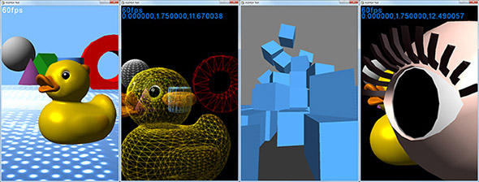
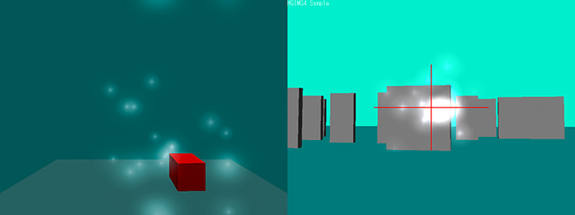
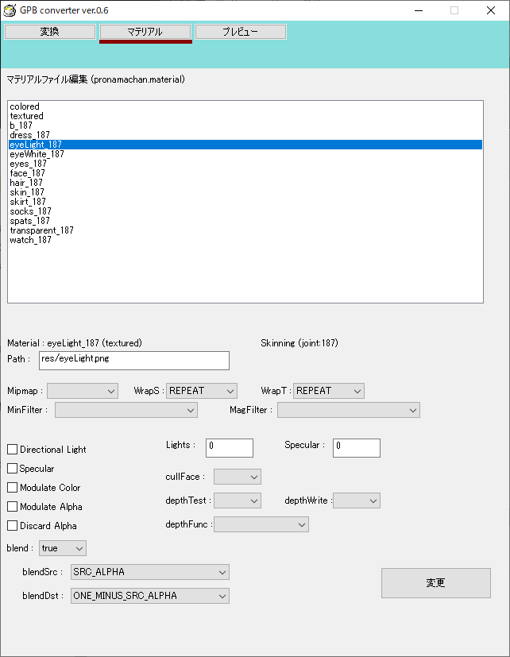

<!DOCTYPE HTML PUBLIC "-//W3C//DTD HTML 4.01 Transitional//EN">
<html lang="ja">
<head>
	<meta http-equiv="Content-Type" content="text/html; charset=UTF-8">
	<meta http-equiv="Content-Language" content="ja">
	<meta http-equiv="Content-Style-Type" content="text/css">
	<meta http-equiv="Content-Script-Type" content="text/javascript">
	<meta name="author" content="OpenHSP3 Project">
	<meta name="keywords" content="HSP,HSP3,HotSoupProcessor,HSP3Dish,android,ndk,google">
	<meta name="description" content="HSP3Dish HGIMG4版に関する情報を掲載">
	<link href="../main.css" rel="stylesheet" type="text/css" media="all">
	<title>HGIMG4プログラミングガイド</title>
</head>
<body>
	<div id="CONTAINER">
	<!-- ヘッダー -->
	<p id="COPY">HSP : Hot Soup Processor ver3.6 / onion software 1997-2021(c)</p>
	
	<h1>HGIMG4プログラミングガイド</h1>

	<!-- 目次 -->
	<ol>
		<li><a href="#ABOUT">はじめに</a></li>
		<li><a href="#ENVIROMENT">動作環境</a></li>
		<li><a href="#USAGE">使用方法</a></li>
		<li><a href="#RESOURCE">リソースフォルダについて</a></li>
		<li><a href="#DLLNOTICE">DLLについての注意点</a></li>
		<li><a href="#COMMANDS">命令一覧(メイン)</a></li>
		<li><a href="#COMMANDS_OBJ">命令一覧(オブジェクト操作)</a></li>
		<li><a href="#COMMANDS_SUB">命令一覧(補助)</a></li>
		<li><a href="#RUNTIME_NOTICE">HGIMG4ランタイムの制限<span class="new">（New!）</span></a></li>
		<li><a href="#UPDATE">HSP3.5版との違い</a></li>
		<li><a href="#DIFF_HGIMG3">HGIMG3との違い</a></li>
		<li><a href="#INITALIZE">初期化と描画の方法</a></li>
		<li><a href="#3DABSTRACT">3D動作の概要</a></li>
		<li><a href="#2DABSTRACT">2D動作の概要</a></li>
		<li><a href="#FONTMES">フォント表示</a></li>
		<li><a href="#MODE_OBJ">オブジェクトのモード設定</a></li>
		<li><a href="#CAMERA">カメラの設定</a></li>
		<li><a href="#LIGHT">ライトの設定<span class="new">（New!）</span></a></li>
		<li><a href="#COLLISION">コリジョングループ設定と衝突検知</a></li>
		<li><a href="#RENDERGRP">レンダリンググループ設定</a></li>
		<li><a href="#PHYSICS">物理挙動の設定<span class="new">（New!）</span></a></li>
		<li><a href="#MATERIAL">マテリアルの設定</a></li>
		<li><a href="#3DMODEL">3Dモデルデータの表示</a></li>
		<li><a href="#GPBMATERIAL">3Dモデルデータのマテリアルについて</a></li>
		<li><a href="#GPBLIGHT">3Dモデルデータのライティング</a></li>
		<li><a href="#SCENE">シーンの描画について</a></li>
		<li><a href="#TRANSPARENT">半透明オブジェクトの描画について</a></li>
		<li><a href="#OBJECTPRM">オブジェクトのコアパラメーター</a></li>
		<li><a href="#OBJECTCLONE">オブジェクトのクローン</a></li>
		<li><a href="#VECTOR">実数ベクトルサポート命令</a></li>
		<li><a href="#ROTORDER">XYZの回転順番について</a></li>
		<li><a href="#FRAMERATE">フレームレートの取得</a></li>
		<li><a href="#ANIMATION">アニメーションクリップの作成</a></li>
		<li><a href="#2DSHADER">2D描画時の独自シェーダー設定</a></li>
		<li><a href="#2DSHADER">2D描画時の独自シェーダー設定</a></li>
		<li><a href="#RENDERBUFFER">レンダリングバッファ</a></li>
		<li><a href="#EVENT">イベントリスト</a></li>
		<li><a href="#POSTEFFECT">ポストエフェクト<span class="new">（New!）</span></a></li>
		<li><a href="#FREEMESH">自由な形状の作成<span class="new">（New!）</span></a></li>
		<li><a href="#NODEINFO">階層情報の取得<span class="new">（New!）</span></a></li>
		<li><a href="#MEMLIMIT">登録の限界数について</a></li>
		<li><a href="#ERRORLOG">エラーログ</a></li>
		<li><a href="#PACKFILE">PACKFILEの対応について</a></li>
		<li><a href="#LICENCE">著作権とライセンス</a></li>
		<li><a href="#ANGLE_LICENCE">Project Angleの著作権とライセンス</a></li>
		<li><a href="#PRONAMA_LICENCE">プロ生ちゃんサンプルデータの著作権とライセンス</a></li>
	</ol>


	<h2 id="ABOUT">はじめに</h2>
	<p>
	HGIMG4は、Hot Soup Processor ver3.6以降とともに使用することで、画面の描画に関する様々な機能拡張を提供します。
	</p>
	<ul>
		HGIMG4の特徴<br><br>
	<li>
		OpenGL/ESまたはDirectX9による描画、シェーダー言語サポート
	</li>
	<li>
		シーン管理と統合化された物理エンジン(Bullet)サポート
	</li>
	<li>
		FBX形式のモデルファイル読み込み、アニメーションサポート
	</li>
	<li>
		カスタムシェーダーによるマテリアル、ライティングをサポート
	</li>
	<li>
		フォントデータ(TTF)のレンダリングサポート
	</li>
	<li>
		オフスクリーンレンダリング及び各種ポストエフェクトサポート
	</li>
	<li>
		WindowsだけでなくLinux,iOS,Android,WebGL上での動作をサポート
	</li>
	<li>
		HSP及びHSP3Dishと同様のライセンス規約、オープンソース 
	</li><br>
	</ul>
	<p>
	
	</p>


	<h2 id="ENVIROMENT">動作環境</h2>

	<p>
	HGIMG4は、OpenGL版とDirectX9(angle)版を選択することができます。
	OpenGL版は、Windows7以降で、OpenGLバージョン3.1以上がインストールされた環境で動作します。
	DirectX9(angle)版は、Windows7以降で、DirectX9最新版のランタイムがインストールされた環境で動作します。
	DirectX9(angle)版は、実行にあたって以下のDLLを必要とします。
	(このDLLは、HSPインストールフォルダに付属しています。
	ユーザーが製作したアプリケーションを配布する場合は、このDLLも配布する
	必要があります)
	</p>
	<ul><ul><ul>
		d3dcompiler_47.dll	追加DLL<br>
		libEGL.dll		追加DLL<br>
		libGLESv2.dll		追加DLL<br>
	</ul></ul></ul>
	<p>
	これらのDLLは、OpenGL版を使用する場合は必要ありません。<br>
	HGIMG4は、以下のようなファイルで構成されています。
	</p>
	<ul><ul><ul>
		hsp3gp.exe (OpenGL実行用ランタイム)<br>
		hsp3gpdx.exe (DirectX実行用ランタイム)<br>
<br>
		docs/hgimg4.txt (このファイル)<br>
		commonフォルダ (HGIMG4ヘッダファイル)<br>
		hsphelpフォルダ (HGIMG4ヘルプファイル)<br>
		runtimeフォルダ (HGIMG4カスタムランタイム)<br>
		sampleフォルダ (HGIMG4サンプルスクリプト & データ)<br>
	</ul></ul></ul>
	<p>
	HGIMG4は、HSP3Dishの上位ランタイムと位置付けられています。
	HSP3Dishの機能は内包した上で、高機能な描画機能を持っています。
	通常のHSP3Dishのスクリプトを動作させることも可能です。
	マルチプラットフォームとして、以下の環境をサポートしています。
	</p>
	<ul><ul><ul>
		Windows 7以降(OpenGL版)、XP以降(DirectX9版)<br>
		Android 5.0以降<br>
		iOS 10以降<br>
		Raspberry Pi (raspbian)<br>
		SDL/OpenGLをサポートするLinux環境<br>
		WebGL/html5をサポートする各種webブラウザ<br>
	</ul></ul></ul>
	<p>
	Android、iOS環境では、HSP3Dishと同様のC++コード変換機能により
	ネイティブなコードを生成し、ストアアプリとしても登録が可能です。
	</p>


	<h2 id="USAGE">使用方法</h2>

	<p>
	HGIMG4を使用したスクリプトを作成する場合には、スクリプトの先頭に
	</p><pre>
	#include "hgimg4.as"
	</pre><p>
	という行を追加してください。<br>
	以上で、HSPの機能が拡張され、このリファレンスで説明をしている命令を
	使用することができるようになります。
<br>
	HGIMG4 DirectX9版ランタイムを使用する場合には、
	</p><pre>
	#include "hgimg4dx.as"
	</pre><p>
	をスクリプトの先頭に記述してください。
	</p><pre>
	#include "hgimg4.as"
	</pre><p>
	を記述した場合は、OpenGL版ランタイムが使用されます。
	どちらのランタイムも使用できる機能に違いはありません。
<br>
	まず最初に、付属のサンプルスクリプトを実行してみてください。
	拡張された機能の簡単な使用例を見ることができるはずです。
	サンプルスクリプトは、HSPインストールフォルダ以下のsample/hgimg4
	に用意されています。
	</p>


	<h2 id="RESOURCE">リソースフォルダについて</h2>

	<p>
	HGIMG4では、3D描画使用時にスクリプトと同じフォルダにある「res」フォルダから必要なリソースを読み込みます。
	リソースファイルは、「sample/hgimg4/res」のフォルダに含まれています。
	以下のファイルは、起動のために必要ですので、実行ファイル作成時なども必ず入れておいてください。
	</p><pre>
	res/shaders フォルダ(中のファイルも含む)
	</pre>
	<p>
	2Dの描画のみを行う場合は、res/shadersフォルダ内のシェーダーファイルは必要ありません。
	<p>


	<h2 id="DLLNOTICE">DLLについての注意点</h2>

	<p>
	HGIMG4は、外部DLLファイルによる拡張プラグインではありません。
	HSP3DISHの機能を内包したランタイムファイルとして提供されています。
	必ず、HGIMG4のランタイムに対応したバージョンのコンパイラ
	(hspcmp.dll)やスクリプトエディタをご使用下さい。<br>
	また、HSP3は実行ランタイムに対応したコードジェネレーター(hspcmp.dll)
	をご使用ください。(HSP3.6以上を推奨)<br>
<br>
	DirectX9版ランタイムの実行ファイル作成時には、「d3dcompiler_47.dll」
	「libEGL.dll」「libGLESv2.dll」の3ファイルが実行ファイルと同じフォルダに
	必要となりますので注意してください。
	</p>


	<h2 id="COMMANDS">命令一覧(メイン)</h2>

	<pre>
	setcls mode,color,tex				画面消去設定
	gpviewport x,y,sx,sy				ビューポート設定
	setborder sx,sy,sz,option			オブジェクト有効範囲設定
	gpgetlog var					HGIMG4エラーログを取得

	gpreset	option					シーンを描画
	gpresetlight p1,p2,p3				カレントライトの初期化
	gpuselight objid				ライトオブジェクトの登録
	gpusecamera objid				カメラオブジェクトの切り替え
	gpusescene sceneid				シーンの切り替え

	gpobjpool start,num				オブジェクトID生成の設定
	delobj objid					オブジェクトの破棄
	gpsetprm objid,prmid,value			オブジェクトのコアパラメーター設定
	gpgetprm var,objid,prmid			オブジェクトのコアパラメーター取得
	setobjname objid,"name"				オブジェクトのノード名を設定する
	getobjname var,objid				オブジェクトのノード名を取得する
	setobjmode id,mode,sw				オブジェクトのモード設定
	setcoli id,mygroup,enegroup			オブジェクトのコリジョン設定
	getcoli val,id,distance				オブジェクトのコリジョン判定
	findobj exmode,group				オブジェクト検索
	nextobj val					次のオブジェクト検索

	gpcolormat var,color,opt			カラーマテリアルの生成
	gptexmat var,"file",opt				テクスチャマテリアルの生成
	gpusermat var,"vsh","fsh","defs",color,opt	カスタムマテリアルの生成
	gpmatprm objid,"name",x,y,z			マテリアルのパラメーター設定
	gpmatprm objid,"name",value			マテリアルのパラメーター設定(2)
	gpmatprm objid,"name",x,y,z,w			マテリアルのパラメーター設定(3)
	gpmatstate objid,"name","value"			マテリアルのステート設定

	gpbox var,size,color,matobj			箱ノードを生成
	gpfloor var,sizex,sizey,color,matobj		床ノードを生成
	gpplate var,sizex,sizey,color,matobj		板ノードを生成
	gpload var,"file","name"			3Dモデルノードを生成
	gpspr var,bufid,celid,gmode			2Dスプライトノード生成
	gpnull var					ヌルノードを生成

	gplight id,opt,range,inner,outer		ライトノードを設定
	gpcamera id,fov,aspect,near,far			カメラノードを設定

	gpclone var,objid				ノードを複製
	setobjmode objid,value,mode			オブジェクトのモード設定
	setalpha objid,value				オブジェクトの透明度(α値)設定
	gplookat objid,x,y,z				指定座標に向けてノードを回転

	gppbind objid,mass,friction,option		ノードに標準的な物理特性を設定
	gppset objid,prmid,x,y,z			ノードの物理パラメーターを設定
	gppapply objid,action,x,y,z			ノードに物理的な力を適用する

	celputm vxpos,vypos,vcelid,bufid,count		セルをまとめて描画する
	gpdraw option					シーン内の全オブジェクトを描画する

	gpaddanim objid,"name",start,end,option		アニメーションクリップを追加
	gpact objid,"name",option			アニメーションクリップを再生/停止
	gpgetanim var,objid,index,prmid			アニメーションクリップ設定を取得
	gpsetanim objid,index,prmid,value		アニメーションクリップ設定を更新
	</pre>


	<h2 id="COMMANDS_OBJ">命令一覧(オブジェクト操作)</h2>

	<pre>
	getpos id,x,y,z					ノード座標を取得
	setpos id,x,y,z					ノード座標を設定
	addpos id,x,y,z					ノード座標を加算
	getposi id,x,y,z				ノード座標を取得(整数値)

	getquat id,x,y,z				ノード回転を取得(クォータニオン)
	getang id,x,y,z					ノード回転を取得
	getangr id,x,y,z				ノード回転を取得(整数値)
	setang id,x,y,z					ノード回転を設定
	setangr id,x,y,z				ノード回転を設定(整数値)
	addang id,x,y,z					ノード回転を加算
	addangr id,x,y,z				ノード回転を加算(整数値)

	getscale id,x,y,z				ノード倍率を取得
	setscale id,x,y,z				ノード倍率を設定
	addscale id,x,y,z				ノード倍率を加算
	getscalei id,x,y,z				ノード倍率を取得(整数値)

	getdir id,x,y,z					ノード移動量を取得
	setdir id,x,y,z					ノード移動量を設定
	adddir id,x,y,z					ノード移動量を加算
	getdiri id,x,y,z				ノード移動量を取得(整数値)

	getwork id,x,y,z				ノードワーク値を取得
	setwork id,x,y,z				ノードワーク値を設定
	addwork id,x,y,z				ノードワーク値を加算
	getworki id,x,y,z				ノードワーク値を取得(整数値)

	getwork2 id,x,y,z				ノードワーク値2を取得
	setwork2 id,x,y,z				ノードワーク値2を設定
	addwork2 id,x,y,z				ノードワーク値2を加算
	getwork2i id,x,y,z				ノードワーク値2を取得(整数値)

	getcolor id,x,y,z				ノードRGBカラーを取得
	setcolor id,x,y,z				ノードRGBカラーを設定
	addcolor id,x,y,z				ノードRGBカラーを加算
	getcolori id,x,y,z				ノードRGBカラーを取得(整数値)
	</pre>


	<h2 id="COMMANDS_SUB">命令一覧(補助)</h2>

	<pre>
	selpos id					移動座標をMOC情報に設定
	selang id					回転角度をMOC情報に設定
	selscale id					スケールをMOC情報に設定
	seldir id					移動量をMOC情報に設定

	objsetf3 x,y,z					選択中のMOC情報を設定
	objaddf3 x,y,z					選択中のMOC情報を加算

	objgetfv fv					選択中のMOC情報を取得
	objsetfv fv					選択中のMOC情報を設定
	objaddfv fv					選択中のMOC情報を加算

	fvset fv,x,y,z					ベクトル設定
	fvseti fv,x,y,z					整数値からベクトル設定
	fvadd fv,x,y,z					ベクトル加算
	fvsub fv,x,y,z					ベクトル減算
	fvmul fv,x,y,z					ベクトル乗算
	fvdiv fv,x,y,z					ベクトル除算
	fvdir fv,x,y,z					ベクトル回転
	fvmin fv,x,y,z					ベクトル最大値
	fvmax fv,x,y,z					ベクトル最小値
	fvouter fv,x,y,z				ベクトル外積
	fvinner fv,x,y,z				ベクトル内積
	fvface fv,x,y,z					座標から角度を得る
	fvunit fv						ベクトル正規化
	fsin fval,rot					サインを求める
	fcos fval,rot					コサインを求める
	fsqr fval,prm					平方根を求める
	froti fval,prm					整数値角度を小数値に変換

	fv2str fv					ベクトルを文字列に変換
	str2fv fv,"x,y,z"				文字列をベクトルに変換
	</pre>


	<h2 id="RUNTIME_NOTICE">HGIMG4ランタイムの制限</h2>

	<p>
	HGIMG4は、HSP3Dishランタイムを拡張する形で実装されています。
	HSP3Dishが持つ命令をすべてサポートしているほか、いくつかの拡張が行なわれています。
	ただし、HSP3Dishによる制約(ActiveXオブジェクト、各種配置オブジェクトの使用不可)も
	同様に発生します。基本的な文法、プログラム制御はHSP3と同様です。<br>
	HSP3Dishについての詳細は、<a href="hsp3dish_prog.htm">HSP3Dish プログラミングマニュアル・基本仕様ガイド(hsp3dish_prog.htm)</a>を参照してください。<br>
	また、プラットフォームごとにいくつか制約があり機能がサポートされないことがあります。
	</p>
		<table class="keywordlist" border="1">
		<tr><th>プラットフォーム</th><th>オフスクリーン<br>(レンダリングバッファ)</th><th>input命令サポート</th></tr>
		<tr><td>Windows</td><td>〇</td><td>〇</td></tr>
		<tr><td>Linux/RaspberryPi</td><td>〇</td><td>〇</td></tr>
		<tr><td>html5(Emscripten)</td><td>×</td><td>×</td></tr>
		<tr><td>android</td><td>〇</td><td>×</td></tr>
		<tr><td>iOS</td><td>×</td><td>×</td></tr>
		</table>
	<p>
	これらの制約は、今後のバージョンで解消される可能性がありますが、現状の仕様ということでご了承ください。
	</p>


	<h2 id="UPDATE">HSP3.5版との違い</h2>

	<p>
	HSP3.6で追加変更された項目については、<a href="update36.htm#HGIMG4">「HSP3.6 新機能ハイライト」</a>を参照してください。
	</p>


	<h2 id="DIFF_HGIMG3">HGIMG3との違い</h2>

	<p>
	HGIMG4では、基本的にHGIMG3とソースコードの互換性はありません。
	しかし、HGIMG3に触れたことがあるユーザーであれば、命令体系やシステム的に継承されている
	点が多いため比較的容易に移行することができるでしょう。
	</p>
	<ul>
	HGIMG3との主な違いは以下の通りです。<br><br>
	<li>
	HGIMG3ではモデルを生成して、オブジェクトに割り当てていましたが、HGIMG4では
	オブジェクト(ノードオブジェクト)を直接生成して配置する形になります。
	</li><li>
	ライトの反映、テクスチャ、色、半透明設定などの情報はマテリアルオブジェクトとして
	生成され、オブジェクトに割り当てる形になります。
	</li><li>
	HGIMG3でsetefx命令により指定されていた半透明マテリアルの設定は利用できません。
	</li><li>
	HGIMG4はOpenGLによる右手座標系が使用されています。Y軸やZ軸の正方向がHGIMG3と異なります
	</li><li>
	HGIMG4ではオブジェクトの回転情報を内部ではクォータニオン形式で保持しています。
	HGIMG3と同様にX,Y,Z回転の角度を与えることも可能ですが、HGIMG3と異なる回転姿勢になる
	可能性があります。
	</li><li>
	同じモデルを複数配置するような場合は、クローン(gpclone命令)を利用することが推奨されます。
	</li></ul>


	<h2 id="INITALIZE">初期化と描画の方法</h2>

	<p>
	初期化を以下の手順に従って行なって下さい。
	</p>
	<pre>
		gpreset				; hgimgの初期化
	</pre>
	<p>
	gpreset命令は、システム全初期化を行なう命令です。
	初期化はいつでも、何度でも行なうことが可能です。

	初期化が終わったら、いつでも登録されているオブジェクトを表示可能な
	状態になります。
	HGIMG4では、描画を以下のようなループで行ないます。
	</p>
	<pre>
	;------------------------------------------------------------------
	*main
		;	描画メイン
		;
		redraw 0			; 描画開始(画面クリア)

		;	
		;	各種描画を行なう
		;	

		redraw 1			; 描画終了
		await 1000/60			; 時間待ち(60フレーム/秒)
		goto *main
	;------------------------------------------------------------------
	</pre>
	<p>
	画面の書き換えに関するソースは、redraw 0で描画開始を知らせて、
	redraw 1により描画終了タイミングを知らせるようにしてください。
	通常のHSP3とは違い、「redraw 0」を指定することにより、スクリーンが
	一旦クリアされます。<br>
<br>
	描画を開始してから、box、mes等の描画命令を自由に記述することができます。
	その後、await命令で時間待ち(ウェイト)をします。「await 10」の場合は、
	最低でも10msだけの待ち時間を入れます。<br>
<br>
	これらのルールは、HSP3Dishと同様です。
	2D描画に使用可能な描画命令と仕様についても、基本的にHSP3Dishと同じになっています。
	サポートされている命令の詳細は、<a href="hsp3dish_prog.htm">HSP3Dish プログラミングマニュアル・基本仕様ガイド(hsp3dish_prog.htm)</a>を参照してください。
	</p>


	<h2 id="3DABSTRACT">3D動作の概要</h2>

	<p>
	HGIMG4は、シンプルで柔軟性のある3D描画システムを提供します。
	重要な構成単位が、「ノードオブジェクト」になります。

	「ノードオブジェクト」は、HGIMG4の操作対象となるもので、
	「ノード」または「オブジェクト」とも呼ばれます。
	「ノードオブジェクト」は、3D世界を構成する要素すべてを含んでおり、
	それぞれが独自の番号(ID)を持っています。
<br>
	ノードオブジェクトは、以下の情報を持っています。
	</p>
<pre>
		識別番号(ID)
		ノード名(Name)
		X,Y,Z座標(Pos)
		X,Y,Z回転(Ang)
		X,Y,Z倍率(Scale)
		X,Y,Z移動量(Dir)
		R,G,Bカラー(Color)
		ワーク値(X,Y,Z,W)(Work,Work2)
		マテリアル特性(MatID)
		物理特性(Physics)
		カメラ(視点)設定(Camera)
		ライト(光源)設定(Light)
		エミッター(パーティクル発生源)設定(Emitter)
</pre>
	<p>
	「シーン」は、複数の「ノードオブジェクト」を含めた世界全体を指します。
	HGIMG4では、「シーン」に登録された「ノードオブジェクト」がレンダリング(描画)の
	対象となります。<br>
	一般的なプログラムの流れとしては、以下のようになります。
	</p>
<pre>
		gpreset命令でシーン全体をリセット
			↓
		必要なノードオブジェクトをシーンに登録する
			↓
		ノードオブジェクト情報の設定を適切に行なう
			↓
		gpdraw命令でシーンの描画を行なう
</pre>
	<p>
	シーンにノードオブジェクトを追加するための命令として以下が用意されています。
	</p>
	<pre>
		gpbox var,size,color,matobj			箱ノードを生成
		gpfloor var,sizex,sizey,color,matobj		床ノードを生成
		gpplate var,sizex,sizey,color,matobj		板ノードを生成
		gpload var,"file","name"			gpbモデルノードを生成
		gpnull var					ヌルノードを生成
		gpclone var,objid				ノードを複製
	</pre>
	<p>
	それぞれの命令詳細は、命令のヘルプ(F1キー)を参照してください。
	シーンに追加されたノードオブジェクトIDは、生成時に指定された変数に代入されます。
	以降は、ノードオブジェクトIDを介して各種情報を操作することが可能です。
<br><br>
	生成されたオブジェクトは、通常(0,0,0)の座標に配置されます。
	3D座標は、右手座標系が使用されています。Z座標値が大きいほど手前に、
	Y座標が大きいほど天井方向に配置されます。
<br><br>
	オブジェクトの座標、角度、スケールを設定するための基本的な命令は以下になります。
	</p>
<pre>
		setpos id,x,y,z		X,Y,Z座標(Pos)を設定
		setang id,x,y,z		X,Y,Z回転(Ang)を設定
		setangr id,x,y,z	X,Y,Z回転(Ang)を設定(整数値)
		setscale id,x,y,z	X,Y,Z倍率(Scale)を設定
</pre>
	<p>
	ノードオブジェクトIDとx,y,zパラメーター(実数値を使用可能)によって指定します。
	</p>
	<pre>
		例:
		setpos 3, 5, 1.2, 0.5
	</pre>
	<p>
	上の例では、ノードオブジェクトID3の物体を座標( 5.0, 1.2, 0.5 )の位置に設定します。
	setang命令では、オブジェクトの向いているX,Y,Z角度を指定して回転を行ないます。
	(角度の単位はラジアン(1周でπ*2)になります)<br>
	また、高速化のため角度を整数値で設定することのできるsetangr命令も用意されています。
	この場合は、256で一周(360度)の単位で指定を行ないます。
	(0が0度、64が90度、128が180度…となります。)<br>
	値にも、以下の情報を設定するための命令が用意されています。
	</p>
<pre>
		setdir id,x,y,z		X,Y,Z移動量(Dir)を設定
		setcolor id,x,y,z	R,G,Bカラー(Color)を設定
		setwork id,x,y,z	ワーク値(X,Y,Z)を設定
		setwork2 id,x,y,z	ワーク2値(X,Y,Z)を設定
</pre>
	<p>
	X,Y,Z移動量(Dir)はオブジェクトの自動移動モード(OBJ_MOVE)が選択された際に参照される
	移動量になります。R,G,Bカラー(Color)は、ライトなど一部のオブジェクトで色情報を設定する
	際に使用されます。
	ワーク値、ワーク値2は、ユーザーが自由に使用できる数値格納用に用意されています。
<br><br>
	直接値を設定するだけでなく加算を行なうadd～系の命令が用意されています。

	</p>
<pre>
		addpos id,x,y,z		X,Y,Z座標(Pos)を加算
		addang id,x,y,z		X,Y,Z回転(Ang)を加算
		addangr id,x,y,z	X,Y,Z回転(Ang)を加算(整数値)
		addscale id,x,y,z	X,Y,Z倍率(Scale)を加算
</pre>
	<p>
	これらは、もともと設定されていた値に対して、指定した値を加算します。
	add～系の命令は、set～系の命令と同様の種類が用意されています。
<br><br>
	また、設定済みの情報を取得するために、get～系の命令が用意されています。
	</p>
<pre>
		getpos id,x,y,z		X,Y,Z座標(Pos)を取得
		getscale id,x,y,z	X,Y,Z倍率(Scale)を取得
		getdir id,x,y,z		X,Y,Z移動量(Dir)を取得
		getwork id,x,y,z	ワーク値(X,Y,Z)を取得
		getwork2 id,x,y,z	ワーク2値(X,Y,Z)を取得
</pre>
	<p>
	これらの命令では、x,y,zに読み出し先の変数名を指定します。
	</p>
	<pre>
		例:
			; カメラのXYZ座標を変数a,b,cに読み出す
			getpos GPOBJ_CAMERA,a,b,c
	</pre>
	<p>
	上の例では、変数aにX座標が、変数bにY座標が、変数cにZ座標が
	それぞれ実数型で代入されます。<br>
	整数値でパラメーターを取得する場合は、以下の命令を使用します。
	</p>
<pre>
		getposi id,x,y,z	X,Y,Z座標(Pos)を整数値で取得
		getscalei id,x,y,z	X,Y,Z倍率(Scale)を整数値で取得
		getdiri id,x,y,z	X,Y,Z移動量(Dir)を整数値で取得
		getworki id,x,y,z	ワーク値(X,Y,Z)を整数値で取得
		getwork2i id,x,y,z	ワーク2値(X,Y,Z)を整数値で取得
</pre>
	<p>
	最後に「i」が付加された命令は、整数値で変数に代入されます。
	座標を整数のみで扱う場合や、高速化を行ないたい場合に使用する
	ことができます。
	</p>
<pre>
		getquat id,x,y,z	ノード回転を取得(クォータニオン)
		getang id,x,y,z		ノード回転を取得
		getangr id,x,y,z	ノード回転を取得(整数値)
</pre>
	<p>
	これらの命令では、回転情報を取得します。
	x,y,zに読み出し先の変数名を指定します。<br>
	回転の情報取得には注意が必要です。3Dノードオブジェクトでは、内部的な
	回転情報をクォータニオン形式を保持しており、完全なX,Y,Zの回転角度を
	求めることが困難です。このため、setang命令で指定したX,Y,Z角度と異なる
	値が取得される可能性があります。あくまでも、近い姿勢を再現するために
	変換された値であることに注意をしてください。
	</p>


	<h2 id="2DABSTRACT">2D描画の概要</h2>

	<p>
	HGIMG4は、2D描画に関する様々な機能が用意されています。
	2D描画の方法は、大きく2つのカテゴリに分かれます。
	</p>
	<ul><ul><ul>
	<li>
	直接描画
</li><br><p>
		mes命令、boxf命令などHSP3Dishがサポートしている標準的な
		描画命令(celput,gcopy,gzoomなど)を利用可能です。
		redraw 0～redraw 1までの描画ループ(1フレームの描画単位)内に
		記述することで描画が実行されます。
	<li>
	スプライトオブジェクトによる描画
</li><br><p>
		オブジェクトの1つとしてシーン内にスプライトオブジェクトを
		登録して管理することができます。
		スプライトオブジェクトは、3Dのノードオブジェクトと同様に
		オブジェクトIDが割り振られ、座標や角度、倍率などを設定することが可能です。
	</p></ul></ul></ul>
	<p>
	必要に応じて、使いやすい方法を選択してください。
	たとえば、背景に大きな2D画像を表示する場合はgcopy命令などの直接描画を、
	敵キャラクターなど大量に登場するものはスプライトオブジェクトといった具合に
	用途を振り分けることができます。
<br><br>
	スプライトオブジェクトを生成する場合は、gpspr命令を使用します。
	</p>
	<pre>
		gpspr var,bufid,celid,gmode			2Dスプライトを生成
	</pre>
	<p>
	bufidで読み込まれた画像のバッファID、celidでセルのID、gmodeで合成モードを指定して
	スプライトオブジェクトを生成します。
	生成されたオブジェクトIDがvarで指定された変数に代入されます。
<br><br>
	生成されたスプライトオブジェクトは、通常(0,0)の座標に配置されます。
	2D座標は、スクリーン座標(画面のドットと１対１に対応した値)で管理され、
	画面の左上が(0,0)の座標となります。
<br><br>
	登録されたスプライトオブジェクトは、gpdraw命令でシーンの描画が行なわれるタイミングで
	自動的に描画されます。その際には、設定されたX,Y倍率、Z回転角度が適用されます。
	スプライトオブジェクトは、オブジェクトが持つ当たり判定(コリジョン)や、モードによる制御など
	様々な機能を活用することができます。
	</p>


	<h2 id="FONTMES">フォント表示</h2>

	<p>
	mes命令により任意の文字列を表示することが可能です。
	表示する際のフォントは、font命令で指定された設定が適用されます。
	</p>
	<pre>
		font msgothic,30,font_antialias
		mes "こんにちは"
	</pre>
	<p>
	デフォルトの設定では、標準的なフォントの16ポイントサイズが設定されています。
	プラットフォームにより、別途フォントファイルが必要な場合があるので注意してください。
	</p>
		<table class="keywordlist" border="1">
		<tr><th>プラットフォーム</th><th>文字コード</th><th>フォントファイル</th></tr>
		<tr><td>Windows</td><td>SJIS</td><td>不要</td></tr>
		<tr><td>Linux/RaspberryPi</td><td>UTF-8</td><td>ipaexg.ttfファイルが必要</td></tr>
		<tr><td>html5(Emscripten)</td><td>UTF-8</td><td>ipaexg.ttfファイルが必要</td></tr>
		<tr><td>android</td><td>UTF-8</td><td>不要</td></tr>
		<tr><td>iOS</td><td>UTF-8</td><td>不要</td></tr>
		</table>
	<p>
	フォント表示は、HSP3Dishと同様にフォント文字列をテクスチャに描画してキャッシュする形になっています。
	この方法は、自由なフォントと文字を使える利点がありますが、異なる内容を広範囲に表示する場合はCPUやメモリ負荷が大きくなります。
	毎フレームごとに変化する値や内容を表示しているとフレームごとの負荷が増大してしまいます。
	また、フォントサイズが大きかったり、画面内に大量のテキストを表示するような場合も負荷が大きくなります。<br>
	フォントによる描画が必要ない場合は、HSP3.5までの軽量な描画形式による表示をシステムリクエストで切り替えることが可能です。(ただし、表示できる文字は英文字のみに制限されます)
		</p><pre>
	setreq SYSREQ_USEGPBFONT,1
		</pre><p>
	上のように、システムリクエストでSYSREQ_USEGPBFONTに1を設定することでHSP3.5互換のフォント表示に切り替えることができます。(この場合、フォントデータとして「res/font.gpb」ファイルを用意する必要があります)<br>
	システムリクエストによるフォント描画の切り替えは、任意のタイミングで行うことが可能です。
	</p>


	<h2 id="MODE_OBJ">オブジェクトのモード設定</h2>

	<p>
	表示オブジェクト(ノードオブジェクト、スプライトオブジェクト)には、ON/OFF可能な
	モード設定が用意されています。
	</p>
	<pre>
		setobjmode id,mode,sw			オブジェクトのモード設定

		ObjID    : オブジェクトID
		mode     : モード値
		sw       : 設定スイッチ
	</pre>
	<p>
	swは、以下のように動作します。
	</p>
	<pre>
		sw = 0 : 指定したモード値を追加
		sw = 1 : 指定したモード値を削除
		sw = 2 : 指定したモード値だけを設定
	</pre>
	<p>
	モードフラグ値は以下の中から選択します。
	</p>
	<pre>
		ラベル             |        内容
		--------------------------------------------------------------
		OBJ_HIDE             非表示(画面から消す)
		OBJ_CLIP             3Dクリッピングを有効にする
		OBJ_XFRONT           正面属性(常に画面に正面を向く)
		OBJ_WIRE             ワイヤーフレームで描画する
		OBJ_MOVE             自動移動を行なう(XYZ移動量を参照する)
		OBJ_FLIP             ボーダー領域で反転する
		OBJ_BORDER           ボーダー領域を有効にする
		OBJ_2D               2Dスプライト
		OBJ_TIMER            タイマーを有効にする
		OBJ_LATE             後から描画される(半透明オブジェクト用)
	</pre>
	<p>
	複数の項目を同時に選択する場合は、「OBJ_LATE|OBJ_MOVE」のように
	「|」で区切って指定することができます。何も指定しない場合は、0にするか
	省略して構いません。
	</p>
	<pre>
		例:
		setobjmode id, OBJ_MOVE, 0
	</pre>
	<p>
	上の例では、変数idで指定されるオブジェクトに、OBJ_MOVE(自動移動を行なう)設定を
	追加します。これにより、このオブジェクトはXYZ移動量(setdir命令で設定される)を
	もとに自動的に移動するようになります。
	</p>


	<h2 id="CAMERA">カメラの設定</h2>

	<p>
	カメラ(視点)は、3Dシーンを描画する基点の座標を持つものです。
	カメラは、ノードオブジェクトの1つとして扱われ、固有のオブジェクトIDを持っています。

	シーンがリセットされると、デフォルトのカメラが配置されます。
	デフォルトのカメラには、GPOBJ_CAMERAマクロを使用してアクセスすることができます。
	</p>
	<pre>
		例:
		setpos GPOBJ_CAMERA, 0,1,5		; カメラ位置を設定
	</pre>
	<p>
	上の例では、デフォルトのカメラを(0,1,5)の座標に設定します。
	カメラは3Dシーンを見るための視点座標となり、ノードオブジェクトの回転により視点方向が
	決定されます。指定された座標をカメラから見るための角度を設定することのできる
	gplookat命令も利用できます。
	</p>
	<pre>
		例:
		gplookat GPOBJ_CAMERA, 0,1,0		; カメラ注視点を設定
	</pre>
	<p>
	上の例では、(0,1,0)の座標を見るための角度がカメラに適用されます。
<br><br>
	デフォルトのカメラだけでなく、シーン内にカメラを複数設定して切り替えることも可能です。
	</p>
	<pre>
		例:
		gpnull id_camera			; ヌルノードを生成する
		gpcamera id_camera, 45, 1.5, 0.5, 768	; カメラとして設定する
		gpusecamera id_camera			; 使用するカメラを選択する
		setpos id_camera, 0,20,20		; カメラ位置を設定する
	</pre>
	<p>
	シーン内に配置されたカメラは、gpusecamera命令により切り替えることができます。
	独自のカメラを生成することにより、FOV(画角)やZ軸の範囲(Zクリッピング範囲)を独自に
	設定することができます。
	<br>
	また、gpcamera命令のカメラタイプ値に1を指定することで、平行投影(Orthographic)を行うカメラを設定することが可能です。

	</p>


	<h2 id="LIGHT">ライトの設定</h2>

	<p>
	ライト(光源)は、3Dシーンに配置可能な照明の情報です。
	ライトは、ノードオブジェクトの1つとして扱われ、固有のオブジェクトIDを持っています。
<br><br>
	シーンがリセットされると、デフォルトのディレクショナルライトが配置されます。
	デフォルトのライトには、GPOBJ_LIGHTマクロを使用してアクセスすることができます。
	</p>
	<pre>
		例:
		setcolor GPOBJ_LIGHT, 1,1,1		; ライトカラーを設定
		setdir GPOBJ_LIGHT, 0.5,0.5,0.5		; アンビエントカラーを設定
	</pre>
	<p>
	上の例では、デフォルトのライト色を(1,1,1)に設定します。
	ライト色は、setcolor命令でノードに設定された色がそのまま使用されます。<br>
	色の設定は、0～1の実数値でRGBごとに指定することができます。1は最大の輝度となるため、
	RGBの段階で表現すると、(R=255,G=255,B=255)になります。<br>
	デフォルトのライトでは、setdirによりアンビエント(環境)カラーを設定することができます。
	上の例では、(R=128,G=128,B=128)がアンビエント(環境)カラーになります。
	<br>
	ディレクショナルライトでは、ライトの回転角度を変更することで、照明を当てる方向が変わります。
<br><br>
	デフォルトのライト以外にライトを設定することが可能です。
	HGIMG4では、以下のライトを使用することができます。それぞれの種別ごとに最大10個のライトを3Dオブジェクトに対して反映させることが可能です。
	</p>
		<table class="keywordlist" border="1">
		<tr><th>種別</th><th>機能</th><th>GPU負荷</th><th>参照されるパラメーター</th></tr>
		<tr><td>ディレクショナルライト</td><td>方向のみを持った光源</td><td>低</td><td>回転(Ang)</td></tr>
		<tr><td>ポイントライト</td><td>座標と影響範囲を持った光源</td><td>中</td><td>座標(Pos),範囲(Range)</td></tr>
		<tr><td>スポットライト</td><td>座標と方向、影響範囲を持った光源</td><td>高</td><td>座標(Pos),回転(Ang),範囲(Range),内側(Inner),外側(Outer)</td></tr>
		</table>
	<p>
<br><br>
	新しいライトを設定するためには、ライトオブジェクトを作成する必要があります。
	これは、3D空間に配置されるオブジェクトの1つになります。
	ライトオブジェクトは、gpnull命令で生成したヌルノードに対してgplight命令を実行することで作成することができます。
	ヌルノードだけでなく、3D空間に配置される3Dモデルをライトオブジェクトとして作成することも可能です。この場合、ライトとしての機能を持つ3Dノードとなります。
	</p>
	<pre>
		例:
		gpnull id_alight			; ヌルノードを生成する
		gplight id_alight, GPOBJ_LGTOPT_NORMAL	; ライトとして登録する
		gpuselight id_alight			; デフォルトのライトに設定
	</pre>
	<p>
	gplight命令は、ライトの種別を指定してパラメーターとともにライトオブジェクトを初期化します。
	</p>
	<pre>
		gplight id,opt,range,inner,outer	ライトノードを設定

		id(0)     : オブジェクトのID
		opt(0)    : ライト生成オプション
		range(1)  : 影響範囲パラメーター
		inner(0.5): 内側の減衰パラメーター
		outer(1)  : 外側の減衰パラメーター
	</pre>
	<p>
	ライト生成オプションにより種別を決定することができます。
	</p>
	<pre>
		  opt値               |  内容
		--------------------------------------------------------------
		  GPOBJ_LGTOPT_NORMAL    平行光源(ディレクショナルライト)
		  GPOBJ_LGTOPT_POINT     点光源(ポイントライト)
		  GPOBJ_LGTOPT_SPOT      スポットライト
	</pre>
	<p>
	以上でライトの特性を持ったオブジェクトが作成されます。
	gplight命令は、あくまでもオブジェクトにライトとしての機能を設定するだけです。
	設定されたライトは、gpuselight命令によりカレントライトとして登録する必要があります。<br>
	カレントライトは、3Dオブジェクトやマテリアルを生成する際に設定されるライトの情報になります。
	デフォルトの光源だけを使用する限りは、カレントライトを意識することはありませんが、
	複数の光源を新しく設定する場合は、適切にカレントライトを設定しておく必要があります。
	</p>
	<pre>
		gpresetlight命令によりカレントライトを初期化する
			↓
		gpuselight命令により必要なライトを登録する
			↓
		3Dオブジェクトやマテリアルを生成する(カレントライトの情報が反映される)
	</pre>
	<p>
	gpresetlight命令は、カレントライトを初期化するための命令で、
	カレントライトを設定しておくことで、以降に生成されたモデルやマテリアルが受けるライトの詳細を決めることができます。<br>
	シーンが初期化された状態では、ディレクショナルライト1個だけを設定できる状態になっています。複数のライトや、ポイントライト、スポットライトなどを使用する場合は、gpresetlight命令によってカレントライトの個数をあらかじめ決めておく必要があります。
	</p>
	<pre>
		gpresetlight p1,p2,p3

		p1=1～9(1) : ディレクショナルライトの個数
		p2=0～9(0) : ポイントライトの個数
		p3=0～9(0) : スポットライトの個数
	</pre>
	<p>
	p1,p2,p3パラメーターで、それぞれのライト種別が使用するライトの最大個数を指定します。ディレクショナルライトは最低でも1つ使用する必要があります。
	それ以外のポイントライト、スポットライトは必要に応じて指定してください。GPUの計算負荷につながるため、できるだけ不要なライトは指定しないようにしてください。<br>
	カレントライトが初期化された後は、gpuselight命令により登録することができます。
	</p>
	<pre>
		gpuselight id,index

		id(0) : 登録するライトオブジェクトのID
		index=0～9(0) : 登録するライトオブジェクトのインデックス
	</pre>
	<p>
	idにライトオブジェクトのIDを指定すれば、それがカレントライトに登録されます。<br>
	indexの値は、複数のライトをカレントライトに登録する場合に使用します。1個目のライトは0、2個目のライトは1…という形で1つの種類につき最大10個のライトを設定することが可能です。<br>
	カレントライトに登録することで、以降に生成されるモデル・マテリアルはカレントライトの影響を受けることになります。
	<br>
	アンビエントカラーは、シーンの中に1つだけ存在し、ディレクショナルライトとしてインデックス0に登録されたライトのパラメーターが参照されます。
	<br><br>
既にオブジェクトに設定されているライトの設定を変更する場合は、setobjlight命令を使用してください。
	</p>
	<pre>
		setobjlight id

		id      : オブジェクトID
	</pre>
	<p>
	これにより、idで指定したオブジェクトが既にライトの設定が行われている場合であっても、カレントライトの設定を上書きします。
	ただし、3Dモデルが生成された時点のカレントライトの設定(ディレクショナルライト、ポイントライト、スポットライトの個数)は変更されませんので注意してください。(必ず、カレントライトに含まれるライトの個数が同一のものを設定するようにしてください。)
	</p>
	<p>
	
	</p>
	<p>
	sample/hgimg4フォルダにライト設定のサンプルとして、light_test1.hsp～light_test5.hspが含まれていますので併せて動作をご確認ください。
	</p>


	<h2 id="COLLISION">コリジョングループ設定と衝突検知</h2>

	<p>
	オブジェクトごとに、コリジョングループを設定することにより、
	種別を識別しやすくし、衝突検知などの機能が利用できるようになります。
	</p>
	<pre>
	setcoli id,mygroup,enegroup		オブジェクトのコリジョン設定

		id       : オブジェクトID
		mygroup  : 自分が属するグループ値
		enegroup : 衝突を検出する対象となるグループ値

		オブジェクトに対してコリジョン情報を設定します。
		グループ値は、
		1,2,4,8,16,32,64,128,256,512,1024,2048,4096,8192,16384,32768…
		の中から1つだけを選択可能です。(32ビット値まで指定可能)
	</pre>
	<p>
	コリジョングループが設定されているオブジェクト同士は、getcoli命令により
	指定範囲内の衝突を検出できるようになります。
	</p>
	<pre>
	getcoli var,id,distance			オブジェクトのコリジョン判定

		var      : 結果が代入される変数名
		id       : オブジェクトID
		distance : 衝突を検出する範囲(実数値)

		指定したオブジェクトが持つコリジョン情報をもとに、その
		オブジェクトが衝突している別なオブジェクトのIDを調べます。
		distanceは、衝突する範囲(半径)をfloat値で指定します。
		衝突が検出された場合は、変数にオブジェクトIDが代入されます。
		何も衝突が検出されなかった場合は、-1が代入されます。
	</pre>
	<p>
	コリジョングループ設定と衝突検知は、3Dノードオブジェクト、2Dのスプライトオブジェクト
	どちらでも利用できます。ただし、3Dノードオブジェクトとスプライトオブジェクト同士は
	座標系が異なるため衝突は検知されません。<br>
	getcoli命令は、球形(または円形)の範囲で座標が重なっているかどうかを検出することで衝突を検知するための機能で、高速で手軽に調べることができますが、正確な3D形状をもとにした接触の判定は行われません。<br>
	ただし、3Dオブジェクトに物理挙動の設定を行った場合は、その情報を使用して正確な接触判定を行うことが可能です。詳しくは、<a href="#PHYSICS">物理挙動の設定</a>の項目をご覧ください。
	</p>


	<h2 id="RENDERGRP">レンダリンググループ設定</h2>

	<p>
	レンダリンググループの設定により、オブジェクトごとに参照されるカメラ・ライトをグループ分けすることが可能です。<br>
	setobjrender命令により、カメラごとに表示する/しないという設定をオブジェクトに与えることができます。
	また、ライティングのグループも設定することができ、オブジェクトごとにライトの反映をコントロールすることができます。
		</p><pre>
	setobjrender id,rendergroup,lightgroup

		id(0) : オブジェクトID
		 rendergroup(1) : レンダリンググループ値
		lightgroup(1) : ライティンググループ値
		</pre><p>
	レンダリンググループ値は、カメラやライトが持つレンダリンググループ値と同一である場合は、有効となります。
	通常は、オブジェクト、カメラともにグループ1が設定されています。特定のカメラからの表示のみ
	表示を無効にしたい場合などに利用できます。<br>
	ライティンググループ値は、特定のライトに対して有効/無効を切り替えるものです。
	ライトが持つライティンググループ値と異なる場合は、ライトが無効となります。<br>
	それぞれのグループ値は、1,2,4,8,16,32,64,128,256,512,1024,2048,4096,8192,16384,32768の中から
	任意のビットを組み合わせて指定可能です。
	</p>


	<h2 id="PHYSICS">物理挙動の設定</h2>

	<p>
	HGIMG4では、Bullet Physics Libraryによる物理挙動を3Dノードオブジェクトに統合しています。
	シーン内に配置された物体に物理特性を設定することで、物理法則に従った動作を行ないます。
	物理挙動の対象となるのは、箱ノード(gpboxで生成)、床ノード(gpfloorで生成)、板ノード(gpplateで生成)
	及びgpbモデルノード(gploadで生成)となります。
<br><br>
	ノードオブジェクトを生成した段階では、物理設定は行なわれていません。
	物理設定を行なう場合は、gppbind命令を使用してください。
	</p>
	<pre>
		gppbind objid,mass,friction,option	ノードに標準的な物理特性を設定

			objid,mass,friction,option
			objid(0)      : オブジェクトID
			mass(1)       : 重さ
			friction(0.5) : 摩擦係数
			option(0)     : 設定オプション
	</pre>
	<p>
	最初に、gppbind命令により基本的な物理設定を行なってください。
	massパラメーターは物体の重さ。frictionパラメーターは摩擦係数です。値を省略した場合は、デフォルト値が使用されます。
	重さ(mass)を0にすることで静的剛体(衝突はするが、動かない)として設定されます。
	それ以外の場合は、物理法則に従って床のある場所まで落下します。<br><br>
	<b>※物理挙動を設定する場合は、必ず床(地面)となる部分を作成しておいてください。
	gpfloor命令によって生成された床に標準的な物理特性を設定することで、固定された床面を生成することができます。
	床が存在しなかった場合、物体は永遠に落下を続けることになります。</b><br><br>
	物理設定を行なったノードオブジェクトは、それ以降自立して動作するようになり、setposなどの座標変更は無効となります。<br><br>
optionパラメーターにより設定時のオプションを付加します。以下のマクロを指定することができます。
	</p>
	<pre>
	  opt値               |  内容
	--------------------------------------------------------------
	  GPPBIND_NOSCALE        コリジョンにノードのスケールを反映させない
	  GPPBIND_MESH           コリジョンとしてノードのモデルを反映させる
	</pre>
	<p>
	ノードオブジェクトに物理設定を行なうと、接触判定を行う情報(コリジョン)が作成されます。<br>
	箱ノード、床ノード、板ノードはそれぞれの形状をコリジョンとして扱います。optionに、GPPBIND_NOSCALEを指定した場合は、スケールが反映されていないもともとの形状がコリジョンとなります。<br>
	3Dモデルノードは、標準ではモデル全体を覆うスフィア(球体)をコリジョンとして作成します。ただし、optionにGPPBIND_MESHを指定した場合は、モデルの形状そのものをコリジョンとして扱います。ただし、複雑なモデル形状をコリジョンにした場合、接触判定にかかる負荷が増大します。<br>
	コリジョンは、モデルの形状とは独立した情報となります。コリジョンが作成された後は、ノードのスケール値は反映されませんので注意してください。
<br><br>
	より詳細な物理設定を行なう場合は、gppset命令を使用してください。
	</p>
	<pre>
		gppset objid,prmid,x,y,z		ノードの物理パラメーターを設定
	</pre>
	<p>
	パラメーターprmidで、設定する項目を指定することができます。
	X,Y,Zに指定された値が、それぞれの項目に適用されます。
	</p>
	<pre>
	        マクロ名                          内容
	    ----------------------------------------------------------------------------
		GPPSET_ENABLE                     X=物理挙動のON/OFF(0=無効)
		GPPSET_FRICTION                   X=摩擦係数, Y=弾力設定
		GPPSET_DAMPING                    X=linear反発(0～1.0), Y=angular反発(0～1.0)
		GPPSET_KINEMATIC                  X=Kinematic設定のON/OFF(0=無効)
		GPPSET_ANISOTROPIC_FRICTION       X,Y,Z=異方性の摩擦
		GPPSET_GRAVITY                    X,Y,Z=重力
		GPPSET_LINEAR_FACTOR              X,Y,Z=ベクトルに沿った移動の設定
		GPPSET_ANGULAR_FACTOR             X,Y,Z=ベクトルに沿った回転の設定
		GPPSET_ANGULAR_VELOCITY           X,Y,Z=回転ベロシティー
		GPPSET_LINEAR_VELOCITY            X,Y,Z=リニアベロシティー
	</pre>
	<p>
	物体に力を加えたい場合は、gppapply命令を使用してください。
	</p>
	<pre>
		gppapply objid,action,x,y,z		ノードに物理的な力を適用する
	</pre>
	<p>
	gppapply命令は、ノードに対して(x,y,z)で指定したベクトルの物理的な力を適用します。
	パラメーターactionで設定できるタイプは、以下の通りです。
	</p>
	<pre>
	        マクロ名                     内容
	    ----------------------------------------------------------------------------
		GPPAPPLY_FORCE               移動しようとする力を加算する
		GPPAPPLY_IMPULSE             瞬間的な衝撃を与える
		GPPAPPLY_TORQUE              トルク(ねじる)力を与える
		GPPAPPLY_TORQUE_IMPULSE      トルク+衝撃を与える
	</pre>
	<p>
	物理設定を行なったオブジェクトでは、詳細な接触判定を行う命令を使用することができます。<br>
	gppcontact及びgppinfo命令により、オブジェクトの物理衝突情報を取得することができます。
	これにより、指定したオブジェクトと接触するオブジェクトのID、衝突した座標、衝突の強さなどを調べることが可能です。
	</p>
	<pre>
		gppcontact var,objid	オブジェクトの物理衝突情報を作成する
	</pre>
	<p>
	gppcontact命令は、objidで指定された3Dオブジェクトが他のオブジェクトに衝突した際の情報をすべて作成します。<br>
	objidで指定された3Dオブジェクトは、必ずgppbind命令により物理設定を行っておく必要があります。
	また、setcoli命令により衝突を検知する対象となるオブジェクトのコリジョングループを適切に設定しておく必要があります。
	varで指定された変数には衝突情報が作成された個数が整数値として代入されます。(エラーが発生した場合は、マイナス値が代入されます。)<br>
	衝突情報は複数作成されることがあります。これは、複数のオブジェクトと同時に衝突することがあるためです。変数に0が代入された場合は、衝突しているオブジェクトがないことを示します。
	実際の衝突情報は、gppinfo命令により取得することができます。衝突情報として、衝突した対象のオブジェクトID、衝突した座標、衝突の強さなどを取得することができます。<br>
	衝突情報はオブジェクトIDごとに作成され、新たにgppcontact命令を実行するまでは保持されます。
	gppcontact命令は、物理挙動の過程で発生した衝突の詳細を得るための命令です。簡易的な衝突を知るだけであれば、getcoli命令を代替で利用することがてきます。
また、あくまでも物理挙動で移動を行った際に衝突した(他のオブジェクトにめり込んだ)という情報をもとにしているため、完全に動きのない状態(単に接しているだけの状態)では衝突情報が作成されないので注意してください。<br>
	</p>
	<pre>
		gppinfo	var,fv,objid,index	オブジェクトの物理衝突情報を取得する
	</pre>
	<p>
	gppinfo命令により、作成されたオブジェクトの物理衝突情報を取得します。必ず、gppcontact命令を先に実行しておく必要があります。<br>
	objidにより指定された3Dオブジェクトの物理衝突情報をvarとfvで指定した変数に代入します。変数には以下の内容が格納されます。
	</p>
	<pre>
	変数                   代入される内容
	--------------------------------------------------------------
	var                    衝突したオブジェクトID
        fv(0)                  衝突したX座標
        fv(1)                  衝突したY座標
        fv(2)                  衝突したZ座標
        fv(3)                  衝突した強さ
	</pre>
	<p>
	gppcontact命令により検出された衝突情報が複数ある場合は、0から始まるインデックス値によって識別します。
	3つの衝突情報がある場合は、インデックス値は0～2を指定することができます。
	処理が正常に終了した場合は、システム変数statに0が代入されます。エラーが発生した場合は、システム変数statにマイナス値が代入されます。
	</p>
	<p>
	gppraytest命令は、オブジェクト同士の接触ではなく、任意のベクトル(空間上の2点)に接触するオブジェクトを調べることができます。
	</p>
	<pre>
		gppraytest var,objid,distance	ベクトル上の物理衝突情報を取得する
	</pre>
	<p>
	objidで指定した3Dノードを持つオブジェクトを基点として、オブジェクトの向いている方向からdistanceで指定された距離の間で最初に衝突する3DオブジェクトのオブジェクトIDを調査します。<br>
	objidで指定されるオブジェクトは、物理設定されている必要はありません。カメラやnullノード等であっても問題ありません。<br>
	varで指定された変数に結果が代入されます。何らかのエラーが発生した場合は、マイナス値が代入されます。
	線分に衝突するオブジェクトがあった場合は、そのオブジェクトIDが代入されます。何も衝突するオブジェクトがなかった場合は、0が代入されます。
	衝突があった場合は、さらにobjidで指定されたオブジェクトのノードワーク値(work,work2)に詳細な情報が格納されます。
	ノードワーク値は、getwork及びgetwork2命令により取得することができます。それぞれに設定される内容は以下の通りです。
	</p>
	<pre>
	ノードワーク値         設定される内容
	--------------------------------------------------------------
	work                   衝突が発生したX,Y,Z座標
	work2                  衝突した面の法線ベクトルX,Y,Z値
	</pre>
	<p>
	gppraytest命令は、物理設定されたオブジェクトすべてが衝突の対象となります。コリジョングループの設定は考慮されません。
	</p>
	<p>
	
	</p>
	<p>
	sample/hgimg4フォルダに物理設定による接触判定のサンプルとして、physics_1.hsp,physics_2.hspが含まれていますので併せて動作をご確認ください。
	</p>

	<h2 id="MATERIAL">マテリアルの設定</h2>

	<p>
	マテリアルは、描画(レンダリング)に関する詳細な設定情報です。
	色に関する情報からテクスチャ画像、シェーダーの設定など幅広い情報を扱います。
	通常のノードオブジェクト生成では、標準的なマテリアルが自動的に適用されます。
	</p>
	<pre>
		例:
		gpbox id_model, 1, 0xffffff	; 白い色の箱ノードを追加
	</pre>
	<p>
	上の例では、白い色の立方体が生成されます。
	ユーザーがマテリアルを独自に生成することにより、別な質感の設定が可能になります。
	マテリアルを生成するための命令は以下の通りです。
	</p>
	<pre>
		gpcolormat var,color,opt			カラーマテリアルの生成
		gptexmat var,"file",opt				テクスチャマテリアルの生成
		gpusermat var,"vsh","fsh","defs",color,opt	カスタムマテリアルの生成
	</pre>
	<p>
	いずれの場合も、マテリアルが生成されると、マテリアルIDと呼ばれる整数値が
	変数に代入されます。以降は、マテリアルIDを介して各種設定を変更することが
	可能となります。
<br><br>
	gpcolormat命令は、単色のカラーマテリアルを生成します。
	</p>
	<pre>
		gpcolormat var,color,opt

		var      : 生成されたマテリアルIDが代入される変数名
		color(0) : マテリアルカラー(24bitRGB値)
		opt(0)   : マテリアルオプション値

		例:
		gpcolormat mat_id,0xff00ff,GPOBJ_MATOPT_NOLIGHT
		gpbox id_model, 1, , mat_id
	</pre>
	<p>
	上の例では、RGBカラーが0xff00ff(紫)の、ライティングを行なわないマテリアルを持った、
	立方体のノードオブジェクトが生成されます。
<br><br>
	ユーザーが生成したマテリアルIDを、オブジェクトが生成時に指定することにより
	独自のマテリアルを持たせることが可能になります。
	マテリアル生成時のオプションで、以下を指定することにより設定を変更することができます。
	これらの設定は、gpmatstate命令で別途設定することも可能です。
	</p>
	<pre>
	        マクロ名                内容
	    ----------------------------------------------------------------------------
		GPOBJ_MATOPT_NOLIGHT    ライティングを行なわない
		GPOBJ_MATOPT_NOMIPMAP   MIPMAPを生成しない
		GPOBJ_MATOPT_NOCULL     カリングを無効にする
		GPOBJ_MATOPT_NOZTEST    Zテストを無効にする
		GPOBJ_MATOPT_NOZWRITE   Zバッファ書き込みを無効にする
		GPOBJ_MATOPT_BLENDADD   プレンドモードを加算に設定する
		GPOBJ_MATOPT_SPECULAR   光源計算時にスペキュラーを適用する
	</pre>
	<p>
	gptexmat命令は、テクスチャ(画像)を持ったマテリアルを生成します。
	</p>
	<pre>
		gptexmat var,"file",opt

		var     : 生成されたマテリアルIDが代入される変数名
		"file"  : 読み込まれるテクスチャファイル名
		opt(0)  : マテリアルオプション値

		例:
		gptexmat id_texmat, "res/qbox.png"	; テクスチャマテリアル作成
		gpbox id_model, 1, , id_texmat		; 箱ノードを追加
	</pre>
	<p>
	上の例では、resフォルダ内のqbox.pngをテクスチャとして持ったマテリアルを生成します。<br>
	テクスチャマテリアルでは、gpcolormat命令のマテリアルオプションに加えて、以下のオプションを指定することができます。
	</p>
	<pre>
	        マクロ名                内容
	    ----------------------------------------------------------------------------
		GPOBJ_MATOPT_MIRROR     反転した画像として表示する
		GPOBJ_MATOPT_CUBEMAP    キューブマップとして設定する
		GPOBJ_MATOPT_NODISCARD  αチャンネルによるピクセル破棄を無効にする
	</pre>
	<p>
	gpusermat命令は、カスタムマテリアルを生成するもので、任意のシェーダーを使って
	描画のすべてをコントロールすることができるようになります。
	これは、シェーダーについての知識がある上級者向けの拡張機能ですので、通常は
	使用する必要はありません。
	</p>
	<pre>
		gpusermat var,"vsh","fsh","defs",color,opt	カスタムマテリアルの生成

		var      : 結果が代入される変数名
		"vsh"    : バーテックスシェーダーファイル名
		"fsh"    : フラグメントシェーダーファイル名
		"defs"   : 追加のラベル定義
		color    : RGBカラーコード
		opt      : マテリアルオプション指定
	</pre>
	<p>
	カスタムマテリアルを生成した場合は、gpmatprm命令によってシェーダーパラメーターに
	渡すための値を設定することができます。
	</p>
	<pre>
		例:
		gpmatprm objid,"u_diffuseColor",1,0,0.5 ; マテリアルのパラメーター設定
	</pre>
	<p>
	上の例では、u_diffuseColorという名称のパラメーターに( 1.0, 0.0, 0.5 )のベクトル値を
	設定します。これにより、マテリアルごとに異なるパラメーターをシェーダーに渡すことが
	可能になります。
<br><br>
	gpmatstate命令は、マテリアルIDを介して表示のためのステート設定を変更します。
	</p>
	<pre>
		gpmatstate objid,"name","value"		マテリアルのステート設定
	</pre>
	<p>
	文字列としてnameで指定された項目に対して、valueで指定された内容を設定します。
	項目と設定内容はすべて文字列で行なうので注意してください。
	設定項目と、内容についての詳細は以下の通りです。
	</p>
	<pre>
		name             value
	    --------------------------------------------------------------------
		"blend"          プレンドの有効/無効切り替え
	                         (true または false を指定)
		"blendSrc"       ブレンド元を選択(下記参照)
		"blendDst"       ブレンド先を選択(下記参照)
		"cullFace"       隠面除去(カリング)の有効/無効切り替え
	                         (true または false を指定)
		"cullFaceSide"   隠面除去(カリング)の面指定
		"depthTest"      true または false
	                         (true または false を指定)
		"depthWrite"     Zバッファ書き込みの有効/無効切り替え
	                         (true または false を指定)
		"depthFunc"      Z値比較方法を選択(下記参照)

		(*)blendSrc,blendDstで設定できる文字列

		"ZERO"                     即値(0)
		"ONE"                      即値(1)
		"SRC_COLOR"                書き込み元カラー
		"ONE_MINUS_SRC_COLOR"      書き込み元カラー(反転値)
		"DST_COLOR"                書き込み先カラー
		"ONE_MINUS_DST_COLOR"      書き込み先カラー(反転値)
		"SRC_ALPHA"                書き込み元α
		"ONE_MINUS_SRC_ALPHA"      書き込み元α(反転値)
		"DST_ALPHA"                書き込み先α
		"ONE_MINUS_DST_ALPHA"      書き込み先α(反転値)
		"CONSTANT_ALPHA"           α固定値
		"ONE_MINUS_CONSTANT_ALPHA" α固定値(反転値)
		"SRC_ALPHA_SATURATE"       書き込み元α反転値

		(*)cullFaceSideで設定できる文字列

		BACK             裏面をカリング
		FRONT            表面をカリング
		FRONT_AND_BACK   両面をカリング

		(*)depthFuncで設定できる文字列

		NEVER            常に拒否
		LESS             小さい値の時のみ許可
		EQUAL            同一値のみ許可
		LEQUAL           同一か小さい値の時のみ許可
		GREATER          大きい値の時のみ許可
		NOTEQUAL         同一でない値のみ許可
		GEQUAL           同一か大きい値の時のみ許可
		ALWAYS           常に許可
	</pre>


	<h2 id="3DMODEL">3Dモデルデータの表示</h2>

	<p>
	gpload命令により、ファイル化された3Dモデルデータ(.gpbファイル)を
	読み込み表示させることができます。
	</p>
	<pre>
		例:
		gpload id_model,"res/duck"		; モデル読み込み
	</pre>
	<p>
	上の例では、resフォルダ内にあるduck.gpbファイルを読み込みます。
	その際に、マテリアル情報が書かれているduck.materialファイルが参照されます。
	さらに、テクスチャが必要な場合は、同じフォルダ内の画像ファイルも読み込まれます。

	gpload命令で読み込むためのファイル(.gpb形式)は、gameplay3Dで標準的に使用されている
	データ形式です。HGIMG4では、.gpb形式を生成するためのHGIMG4ツールを用意しています。<br>
	HSPスクリプトエディタの「ツール」メニューから「HGIMG4ツールを開く」を選択するか、
	</p>
	<pre>
		gpbconv.exe
	</pre>
	<p>
	を起動することでツールが起動します。
	(内部でコマンドラインツールのgameplay-encoder.exeを呼び出します)
		</p>
		<p>
		
		</p>
		<p>
	HGIMG4ツールでは、fbx形式のファイルを.gpb形式に変換することが可能です。
	また、.gpb形式とともに読み込まれるマテリアル情報(.material)の出力・確認が可能です。
<br><br>
	fbx形式は、Autodesk社の3Dツールで使用されている標準的な3D形式です。
	3Dツール「Unity」を使って、fbx形式の変換や確認を行うことが可能です。
	詳しくは、<a href="hgimg4_unity.html" target="_blank">こちらのページ</a>をご覧ください。
	</p>
	<pre>
		<a href="hgimg4_unity.html" target="_blank">HGIMG4 Unity連携ガイド</a>
		<a href="hgimg4_unity.html" target="_blank">hgimg4_unity.html</a>
	</pre>
		</p>
		<p>
		
		</p>
		<p>
	現在、fbxの出力とgpbの変換を確認しているツールは、Blender,Maya,Unityになります。<br>
	gpbconv.exe、gameplay-encoder.exeはHSPフルセットに同梱されている最新版をご使用ください。
	コンバーターとHSPランタイムのバージョンが異なっている場合、正しく表示されない場合があります。
	</p>


	<h2 id="GPBMATERIAL">3Dモデルデータのマテリアルについて</h2>

	<p>
	.gpb形式とともに読み込まれるマテリアル情報(.materialファイル)には、モデルが持つマテリアル(質感)についての詳細な情報が含まれています。
	.materialファイルは、テキスト形式のファイルなので、通常のテキストエディタで閲覧したり、必要に応じて内容を編集することが可能です。
	<br>
	.materialファイルは、HGIMG4ツールから確認・編集を行うことが可能です。
	HGIMG4ツールは、HSPスクリプトエディタの「ツール」メニューから「HGIMG4ツールを開く」を選択するか、
	「gpbconv.exe」を直接実行してください。
	<br>
	以下は、マテリアル情報に含まれるテキスト内容の例です。
	複数のマテリアルが含まれている場合は、「material マテリアル名」に続く「{」から「}」の範囲が設定になります。
	</p>
	<pre>
	material colored
	{
	    u_worldViewProjectionMatrix = WORLD_VIEW_PROJECTION_MATRIX
	    
	    renderState
	    {
	        cullFace = true
	        depthTest = true
	    }
	    
	    technique
	    {
	        pass 
	        {
	            defines = DIRECTIONAL_LIGHT_COUNT 1
	            vertexShader = res/shaders/colored.vert
	            fragmentShader = res/shaders/colored.frag
	        }
	    }
	}
	</pre>
	<p>
	renderState設定部分で、マテリアルごとのレンダリング設定を定義しています。
	</p>
	<pre>
		ステート名           内容
		-------------------------------------------------
		cullFace             裏面の消去(true/false)
		depthTest            Zテスト(true/false)
		depthWrite           Z書き込み(true/false)
		stencilTest          ステンシルテスト(true/false)
		stencilWrite         ステンシル書き込み(true/false)
		blend                ピクセルブレンドの設定(true/false)
		blendSrc             ブレンド元設定(*1)
		blendDst             ブレンド先設定(*1)
		depthFunc            Zテスト機能(*2)

		(*1) 以下から選択
		ZERO / ONE / SRC_COLOR / ONE_MINUS_SRC_COLOR / 
		DST_COLOR / ONE_MINUS_DST_COLOR / SRC_ALPHA / 
		ONE_MINUS_SRC_ALPHA / DST_ALPHA / ONE_MINUS_DST_ALPHA / 
		CONSTANT_ALPHA / ONE_MINUS_CONSTANT_ALPHA / SRC_ALPHA_SATURATE

		(*2) 以下から選択
		NEVER / LESS / EQUAL / LEQUAL / GREATER / GEQUAL / 
		NOTEQUAL / ALWAYS
	</pre>
	<p>
	pass設定部分で、マテリアルごとのシェーダー設定を定義しています。
	</p>
	<pre>
		設定名               内容
		-------------------------------------------------
		defines              シェーダーコンパイル時のラベル定義
		vertexShader         バーテックスシェーダーファイルのパス
		fragmentShader       フラグメントシェーダーファイルのパス
	</pre>
	<p>
	sampler設定部分で、マテリアルごとのテクスチャ設定を定義しています。
	</p>
	<pre>
		設定名               内容
		-------------------------------------------------
		path                 画像ファイルのパス
		wrapS                横方向のラップ設定(REPEAT/CLAMP)
		wrapT                縦方向のラップ設定(REPEAT/CLAMP)
		mipmap               ミップマップ設定(true/false)
		minFilter            縮小フィルター設定(*1)
		magFilter            拡大フィルター設定(*1)

		(*1) 以下から選択
		NEAREST / LINEAR / NEAREST_MIPMAP_NEAREST / 
		LINEAR_MIPMAP_NEAREST / NEAREST_MIPMAP_LINEAR / 
		LINEAR_MIPMAP_LINEAR
	</pre>
	<p>
	以下の例では、「path = 」に続く文字列がファイルのパス名になります。
	該当するテクスチャは、「res/Metal_Corrogated_Shiny.png」から読み込まれることを示しています。
	</p>
	<pre>
	    sampler u_diffuseTexture
	    {
	        path = res/Metal_Corrogated_Shiny.png
	        wrapS = REPEAT
	        wrapT = REPEAT
	    }
	</pre>
	<p>
	FBXが参照するテクスチャは、gpbconv.exeで変換した場合、マテリアル情報(.material)に
	出力されるテクスチャファイル名は、resフォルダ以下に統一されます。
	正しく読み込みができない場合は、テクスチャ(画像)ファイルが、.materialファイルで
	指定された場所に存在するか確認をしてみてください。
	</p>
	<p>
	
	</p>


	<h2 id="GPBLIGHT">3Dモデルデータのライティング</h2>

	<p>
	gpload命令で読み込まれたモデルは、変換時のfbxに記録されている
	シェーディング情報を元にマテリアル設定が行なわれます。
	つまり、モデルのライティング設定は、.materialファイルによって決まります。
<br><br>
	ライティングされないモデルに対して、ライティングを適用する場合には、
	.materialファイル内のdefine定義を修正する必要があります。
	pass設定部分のdefine定義に「DIRECTIONAL_LIGHT_COUNT 1」が指定されている
	マテリアルはライティング計算の対象になります。
	(「DIRECTIONAL_LIGHT_COUNT 1」の指定がない場合は、光源計算を行いません。)
	define定義は、「;」記号で区切ることで複数の定義を記述できます。
	「SPECULAR;DIRECTIONAL_LIGHT_COUNT 1」のように記述した場合には、
	ライティング計算とスペキュラーが適用されます。
<br><br>
	ライティング及びスペキュラーを適用する場合には、material設定部分に
	以下の定義を追加する必要があります。
	</p>
	<pre>
            u_inverseTransposeWorldViewMatrix = INVERSE_TRANSPOSE_WORLD_VIEW_MATRIX
            u_cameraPosition = CAMERA_WORLD_POSITION
            u_specularExponent = 50
	    u_directionalLightColor[0] = 1, 1, 1
	    u_directionalLightDirection[0] = 0, 0, -1
	</pre>
	<p>
	これらは、シェーダーに渡されるデフォルトのパラメーターになります。
	「u_worldViewProjectionMatrix」の定義を行なっている行の下に追加してください。
	(「u_specularExponent」はスペキュラーの強度を示します。)
	</p>


	<h2 id="SCENE">シーンの描画について</h2>

	<p>
	gpdraw命令は、シーン内のオブジェクトをすべて描画する命令です。
	以下のオプションを指定することで、限られた項目の描画だけを行なうことができます。
	</p>
	<pre>
	        マクロ名                      内容
	    --------------------------------------------------------------------
		GPDRAW_OPT_OBJUPDATE          オブジェクトの自動移動処理
		GPDRAW_OPT_DRAWSCENE          3Dシーン描画処理
		GPDRAW_OPT_DRAWSCENE_LATE     3Dシーン描画処理(OBJ_LATE)
		GPDRAW_OPT_DRAW2D             2Dスプライト描画処理
		GPDRAW_OPT_DRAW2D_LATE        2Dスプライト描画処理(OBJ_LATE)
	</pre>
	<p>
	OBJ_LATEのモードが付加されたもの(半透明α値が設定されているものを含む)は、
	不透明のオブジェクトよりも後に描画するため、項目が分けられています。
	複数の項目を「|」で区切って指定することもできます。
	</p>
	<pre>
		例:
		gpdraw GPDRAW_OPT_DRAW2D|GPDRAW_OPT_DRAW2D_LATE
	</pre>
	<p>
	上の例では、2Dスプライト描画処理、2Dスプライト描画処理(OBJ_LATE)だけを実行します。
	これを利用すると、3Dシーン描画と2Dスプライト描画の間にgcopy命令など別な描画命令による
	表示を行なうことが可能になります。
<br><br>
	gpdraw命令のパラメーターを省略した場合は、すべての項目が選択されている状態になります。
	通常は、パラメーターを指定しなくても問題ありません。
	また、2Dの直接描画命令だけを使用して、オブジェクトによる描画が不要な場合は、
	gpdraw命令を記述する必要もありません。
	</p>


	<h2 id="TRANSPARENT">半透明オブジェクトの描画について</h2>

	<p>
	αチャンネル値の設定により、2Dスプライトオブジェクト及び3Dノードオブジェクトの
	透明度を変更することができます。
	</p>
	<pre>
		setalpha オブジェクトID, α値
	</pre>
	<p>
	α値は、0～255までの整数値で、0が完全な透明、255が完全な不透明となります。
	α値が255以外(半透明)の状態となったオブジェクトは、描画順序が前面に変更されます。
	(OBJ_LATEのモードが指定されたのと同じ状態)
<br><br>
	また、フェードパラメーターにより、オブジェクトの透明度(Alpha値)を自動的に
	変化させることが可能です。フェードアウトやフェードインなどを手軽に
	実現することができます。
	フェードパラメーターは、gpsetprm命令により設定します。
	</p>
	<pre>
		例:
		gpsetprm id, PRMSET_FADE, -4	; フェードアウト
	</pre>
	<p>
	上の例では、idが示すオブジェクトを1フレームごとに4ずつ透明度を
	減算してフェードアウトします。
	フェードアウト後は、自動的にオブジェクトが消去されます。
	gpsetprmで設定する値が、マイナス値の場合はフェードアウト、
	プラス値の場合はフェードインになります。
	値が大きいほど、変化の速度も速くなります。
	いずれの場合も、オブジェクトのアルファ値(PRMSET_ALPHAやsetalpha命令で
	設定される0～255の値)に対して、加算・減算が行なわれます。
	</p>
	<p>
	半透明(αチャンネル)を含む描画の処理は、通常の描画と比べて描画の負荷が高くなるため、よく検討した上で適用してください。
	αチャンネルを含むテクスチャで、半透明ではないもの(透明・不透明しかないもの)については、標準でピクセルのカットオフ(αチャンネルが0のピクセルの描画を破棄する)が適用されるため、
	特に意識することなくオブジェクトの描画を行うことができます。
	逆に、αチャンネルが1～254で奥が透過して見えるような場合は、Z座標の奥からソートして順番に描画するなどの処理が必要になります。(Z座標による描画ソート機能は、将来のバージョンでサポートされる予定です)
	</p>


	<h2 id="OBJECTPRM">オブジェクトのコアパラメーター</h2>

	<p>
	オブジェクトごとに保持されている重要な設定値をコアパラメーターと呼びます。
	コアパラメーターは、32bit整数値で、以下の命令を介して読み書きが可能です。
	</p>
	<pre>
	gpsetprm objid,prmid,value			オブジェクトのコアパラメーター設定
	gpgetprm var,objid,prmid			オブジェクトのコアパラメーター取得
	</pre>
	<p>
	コアパラメーターのIDとして指定可能な項目は以下の通りです。
	</p>
	<pre>
		マクロ名             | 内容
		--------------------------------------------------------------
		PRMSET_FLAG            オブジェクト登録フラグ(*)
		PRMSET_MODE            モードフラグ値
		PRMSET_ID              オブジェクトID(*)
		PRMSET_ALPHA           透明度(α値)
		PRMSET_TIMER           タイマー値
		PRMSET_MYGROUP         自身のコリジョングループ
		PRMSET_COLGROUP        衝突検出するコリジョングループ
		PRMSET_SHAPE           形状ID(*)
		PRMSET_USEGPMAT        マテリアルID
		PRMSET_USEGPPHY        物理設定ID
		PRMSET_COLILOG         コリジョンログID(*)
		PRMSET_SPRID           ソースバッファID(スプライトのみ)
		PRMSET_SPRCELID        ソースのセルID(スプライトのみ)
		PRMSET_SPRGMODE        コピーモード(スプライトのみ)

	(*)が付いたコアパラメーターは、書き込みを行なうことができません。
	</pre>
	<p>
	PRMSET_MODEで設定されるモードフラグ値では、ビットごとにオブジェクトの
	挙動を設定することができます。
	特定のモードフラグ値だけを設定・消去するためのsetobjmode命令も用意されています。
	詳しくは、「オブジェクトのモード設定」を参照してください。
	</p>


	<h2 id="OBJECTCLONE">オブジェクトのクローン</h2>

	<p>
	クローン機能は、既に存在するオブジェクトと同じ設定で、新しいオブジェクトを
	生成するものです。同一の形状、パラメーター設定(物理設定を除く)を持ちますが座標や角度
	などを新しく設定することができます。
	同一の物体を複数生成する場合に、設定や読み込みを何度も行なう手間を軽減し高速化にも
	つながります。
	</p>
	<pre>
		例:
		gpload id_model,"res/duck"	; モデル読み込み
		gpclone i, id_model		; 同じものをクローン
	</pre>


	<h2 id="VECTOR">実数ベクトルサポート命令</h2>

	<p>
	実数ベクトルサポート命令は、小数値、ベクトル値などの情報を扱うための
	命令群です。ベクトルを変数に格納する方法としてFV値という表現が出て
	きますが、これは「変数名=1.0」のように1つの値を代入するのではなく
	「変数名(0)=X:変数名(1)=Y:変数名(2)=Z」のように実数型の配列変数として
	3つの要素(X,Y,Z)を格納しておく形式です。
<br><br>
	FV値を使用することで、３次元座標やベクトルなどの情報を比較的
	整理して扱うことができます。FV値を演算する命令では、同時に3つの要素に
	対して計算されるため、１つの要素ごとに計算するよりもシンプルで高速に
	処理を行なうことができます。
	</p>
	<pre>
	fvseti fv,x,y,z					整数値からベクトル設定

		fv      = FV値が代入される変数名
		(x,y,z) = 整数値

		(x,y,z)で指定された整数値をベクトルとしてFV値に代入する。

	fvset fv,x,y,z					ベクトル設定

		fv      = FV値が代入される変数名
		(x,y,z) = 実数値

		(x,y,z)で指定された整数値をベクトルとしてFV値に代入する。

	fvadd fv,x,y,z					ベクトル加算
	fvsub fv,x,y,z					ベクトル減算
	fvmul fv,x,y,z					ベクトル乗算
	fvdiv fv,x,y,z					ベクトル除算

		fv      = FV値が代入される変数名
		(x,y,z) = 計算値(実数値)

		fvで指定された変数に格納されているFV値と、指定された
		小数値(X,Y,Z)の演算を並列で行ないます。

	fvdir fv,x,y,z					ベクトル回転

		fv      = FV値が代入される変数名
		(x,y,z) = 回転角度(実数値)

		fvで指定された変数に格納されているベクトル(FV値)を、
		小数値(X,Y,Z)で指定されたX,Y,Z角度に回転させます。

	fvmin fv,x,y,z					ベクトル最大値

		fv      = FV値が代入される変数名
		(x,y,z) = 比較値(実数値)

		fvで指定された変数に格納されているFV値と、
		小数値(X,Y,Z)を比較して、値の大きいものを代入します。
		FV値の各要素を最小値までに切り詰める場合に使用します。

	fvmax fv,x,y,z					ベクトル最小値

		fv      = FV値が代入される変数名
		(x,y,z) = 比較値(実数値)

		fvで指定された変数に格納されているFV値と、
		小数値(X,Y,Z)を比較して、値の小さいものを代入します。
		FV値の各要素を最大値までに切り詰める場合に使用します。

	fvouter fv,x,y,z				ベクトル外積

		fv      = FV値が代入される変数名
		(x,y,z) = 演算するベクトル値(実数値)

		fvで指定された変数に格納されているFV値と、
		小数値(X,Y,Z)で指定するベクトルの外積を求めて代入します。

	fvinner fv,x,y,z				ベクトル内積

		fv      = FV値が代入される変数名
		(x,y,z) = 演算するベクトル値(実数値)

		fvで指定された変数に格納されているFV値と、
		小数値(X,Y,Z)で指定するベクトルの内積を求めてfv.0に代入します。

	fvface fv,x,y,z					座標から角度を得る

		fv      = FV値が代入される変数名
		(x,y,z) = X,Y,Z座標値(実数値)

		fvで指定された変数に格納されているベクトル(FV値)を基点とする
		X,Y,Z座標から、指定されたX,Y,Z座標を直線で見るための回転角度を求めて
		代入します。

	fvunit fv						ベクトル正規化

		fv      = FV値が代入される変数名

		fvで指定された変数に格納されているベクトル(FV値)を正規化します。

	fv2str fv						ベクトルを文字列に変換

		fvで指定された変数に格納されているベクトル(FV値)を文字列に
		変換してシステム変数refstrに結果を返します。

	str2fv fv,"x,y,z"				文字列をベクトルに変換

		"x,y,z"で指定された文字列情報を「,」で区切られたX,Y,Z小数値として
		読み出し、fvで指定された変数に格納します。

	str2f fval,"val"				文字列を小数値に変換

		"val"で指定された文字列情報を小数値として読み出し、
		fvalで指定された変数に格納します。

	f2str val,fval					小数値を文字列に変換

		fvalで指定された小数値を文字列に変換して、valで指定された文字列型の
		変数に結果を返します。
	</pre>
	<p>
	FV値が代入された変数名で、オブジェクトのパラメーターを設定したり、取得することができます。
	</p>
	<pre>
		例:
		fvset fv, 1,5,2				; FV値を代入
		selpos GPOBJ_CAMERA			; カメラの座標設定を選択
		objsetfv fv				; カメラにFV値を設定
	</pre>
	<p>
	上の例では、カメラの座標を(1,5,2)に設定しています。
	sel～系の命令で設定先を選択した後、objsetfv等の命令で選択されたオブジェクトに
	アクセスすることができます。
	</p>
	<pre>
		selpos id				X,Y,Z座標(Pos)を選択
		selang id				X,Y,Z回転(Ang)を選択
		selscale id				X,Y,Z倍率(Scale)を選択
		seldir id				X,Y,Z移動量(Dir)を選択
		selcolor id				R,G,Bカラー(Color)を選択
		selwork id				ワーク値(X,Y,Z)を選択
		selwork2 id				ワーク2値(X,Y,Z)を選択
	</pre>
	<p>
	これらsel～系の命令で設定先を選択した後、以下の命令で取得・設定・加算などを
	行なうことが可能です。
	</p>
	<pre>
		objgetfv fv				選択中のMOC情報を取得
		objsetfv fv				選択中のMOC情報を設定
		objaddfv fv				選択中のMOC情報を加算
	</pre>
	<p>
	実数ベクトルサポート命令は、必ずしもすべての人が使う必要はありません。
	中上級者の方が場面に合わせて使用の選択するといいでしょう。
	</p>


	<h2 id="ROTORDER">XYZの回転順番について</h2>

	<p>
	HGIMG4では、オブジェクトの姿勢をX,Y,Zの回転角度で指定することができますが、
	アニメーションデータや、内部の管理ではクォータニオン形式による回転情報を使用しています。<br>
	オブジェクトの姿勢情報をXYZの回転角度で取得する場合、getang,getangr命令を使用することができますが、
	完全なX,Y,Zの回転角度を求めることが困難なため、setang命令で指定したX,Y,Z角度と異なる
	値が取得される可能性があります。あくまでも、近い姿勢を再現するために変換された値であることに注意をしてください。
	<br>
	回転角度を指定する場合は、通常setang命令を使用しますが、この場合はX->Y->Zの順番で回転させた姿勢が適用されます。
	これだけでは不十分な場合は、以下のように回転順番が異なる命令が用意されているのでご活用ください。
	</p><pre>
	setang (X->Y->Zの順番による回転角度の設定)
	setangy (Y->X->Zの順番による回転角度の設定)
	setangz (Z->Y->Xの順番による回転角度の設定)
	event_ang (X->Y->Zの順番による回転角度のイベント変化)
	event_angy (Y->X->Zの順番による回転角度のイベント変化)
	event_angz (Z->Y->Xの順番による回転角度のイベント変化)
	event_setang (X->Y->Zの順番による回転角度のイベント設定)
	event_setangy (Y->X->Zの順番による回転角度のイベント設定)
	event_setangz (Z->Y->Xの順番による回転角度のイベント設定)
	</pre>


	<h2 id="FRAMERATE">フレームレートの取得</h2>

	<p>
	getreq命令により、描画時のフレームレートを取得することができます。
	</p>
	<pre>
		getreq fps,SYSREQ_FPS
	</pre>
	<p>
	上の例では、変数fpsにフレームレート(1秒間に画面が描画された回数)を代入します。
	フレームレートは、基本的に描画ループ(redraw 0～redraw 1の繰り返し)で指定される
	await命令の待ち時間で決定されます。
	フレームレートを一定に保ち、画面のちらつき(ティアリング)を防止するために、
	VSYNC待ち(垂直同期待ち)を指定することができます。
	</p>
	<pre>
		setreq SYSREQ_VSYNC,1
		gpreset
	</pre>
	<p>
	上のように、gpresetの前でsetreq命令によりVSYNC待ちを有効にしてください。
	これにより、通常は秒間60フレームごとの動作となります。
	(その場合でも、await命令は入れるようにしてください)
	</p>


	<h2 id="ANIMATION">アニメーションクリップの作成</h2>

	<p>
	モデルデータ(.gpbファイル)から読み込まれたアニメーションを、
	複数のクリップとして取り出して再生することができます。
	モデルに複数のアニメーションを持たせるためには、あらかじめ
	1つの長いアニメーションとして登録したものを用意する必要があります。
<br><br>
	アニメーションクリップは、アニメーションデータ内の任意の区間を
	アニメーションとして再生するためのセットです。
	アニメーションクリップには、文字列で名前を設定することができます。
	</p>
	<pre>
		gpaddanim id_model,"run",0,700		; "run"クリップを設定

	</pre>
	<p>
	上の例では、「run」という名前のアニメーションクリップを設定しています。
	「run」のアニメーションクリップは、0(ミリ秒)から700(ミリ秒)のフレームを
	繰り返すアニメーションとして設定されます。
	設定されたアニメーションクリップは、gpact命令で再生できます。
	(複数のアニメーションクリップを同時に再生することができます)
	</p>
	<pre>
		gpact id_model,"run"			; "run"クリップを再生
	</pre>
	<p>
	gpact命令は、指定されたアニメーションクリップの再生・停止・一時停止
	などのコントロールが可能です。
	</p>
	<pre>
		gpact objid,"name",option	アニメーションクリップを再生/停止

		objid(0)  : オブジェクトID
		"name"(""): アニメーションクリップ名
		option(1) : 再生オプション

		    option値

		        マクロ名              値          内容
		    -----------------------------------------------
			GPACT_STOP            0           停止
			GPACT_PLAY            1           開始
			GPACT_PAUSE           2           一時停止
	</pre>
	<p>
	さらに、アニメーションクリップの状態を取得するための、gpgetanim命令が
	用意されています。
	</p>
	<pre>
		gpgetanim var,objid,index,prmid		アニメーションクリップ設定を取得

		var   : 情報が代入される変数
		objid(0) : オブジェクトID
		index(0) : アニメーションクリップのインデックス(0～)
		prmid(0) : パラメーターID
	</pre>
	<p>
	objidで設定を取得するオブジェクトIDを、indexにアニメーションクリップの
	インデックスを指定します。
	アニメーションクリップのインデックスは、オブジェクトが保持している
	アニメーションクリップに順番に割り振られる番号です。0,1,2,3…のような
	0から始まる整数値で、存在しないインデックスが指定された場合は
	システム変数に-1(エラー)が代入されます。
	prmidでどのような情報を取得するかを指定します。
	prmidで指定できる値は以下の通りです。
	</p>
	<pre>
	        マクロ名                   値          内容
	    --------------------------------------------------------
		GPANIM_OPT_START_FRAME     0           開始フレーム(ミリ秒単位)
		GPANIM_OPT_END_FRAME       1           終了フレーム(ミリ秒単位)
		GPANIM_OPT_DURATION        2           再生の長さ(ミリ秒単位)
		GPANIM_OPT_ELAPSED         3           経過時間(ミリ秒単位)
		GPANIM_OPT_BLEND           4           ブレンド係数(%単位)
		GPANIM_OPT_PLAYING         5           再生中フラグ(0=停止/1=再生)
		GPANIM_OPT_SPEED           6           再生スピード(%単位)
		GPANIM_OPT_NAME            16          アニメーションクリップ名
	</pre>
	<p>
	また、gpsetanim命令でアニメーションクリップの詳細な設定を行なうことが可能です。
	</p>
	<pre>
		gpsetanim objid,index,prmid,value	アニメーションクリップ設定を更新

		objid(0) : オブジェクトID
		index(0) : アニメーションクリップのインデックス(0～)
		prmid(0) : パラメーターID
		value(0) : 設定される値(整数値)
	</pre>
	<p>
	指定されたアニメーションクリップの設定をvalueで指定される新しい値で更新します。
	objid、indexの指定は、gpgetanim命令と同様です。
	prmidでどのような情報を設定するかを指定します。prmidで指定できる値は以下の通りです。
	</p>
	<pre>
	        マクロ名                   値          内容
	    --------------------------------------------------------------
		GPANIM_OPT_DURATION        2           再生の長さ(ミリ秒単位)
		GPANIM_OPT_BLEND           4           ブレンド係数(%単位)
		GPANIM_OPT_SPEED           6           再生スピード(%単位)
	</pre>
	<p>
	これにより、アニメーションクリップごとの再生スピードや再生ブレンド係数を変更することができます。
	</p>


	<h2 id="2DSHADER">2D描画時の独自シェーダー設定</h2>

	<p>
	3D描画時に使用されるシェーダー(GLSL)は、.materialファイル内で指定されている
	シェーダーファイルを変更することで描画を細かく変更することができます。
	これに対して、gcopy,celputなど2Dで直接描画を行なう命令は、スプライト描画シェーダー
	が標準で使用されます。(sprite.frag/sprite.vert)
	これをユーザーが作成した別なシェーダーに置き換えることで、2Dの直接描画を独自に拡張することができます。
	2D描画に使用する元の画像バッファに、シェーダーを割り当てます。
	</p>
	<pre>
		gpusershader "res/shaders/user.vert", "res/shaders/user.frag", ""
		buffer 1,512,512,screen_usergcopy
	</pre>
	<p>
	上の例では、バッファID1を512×512ドットのサイズで初期化して、
	user.vert/user.fragのシェーダーを割り当てています。
	(user.vertとuser.fragのシェーダーファイルはあらかじめ用意しておく必要があります)
	gpusershader命令は、ユーザー定義のシェーダーを指定するための命令です。
	</p>
	<pre>
		gpusershader "vsh","fsh","defs"		ユーザーシェーダーの指定

		"vsh"     : バーテックスシェーダーファイル名
		"fsh"     : フラグメントシェーダーファイル名
		"defs"    : 追加のラベル定義
	</pre>
	<p>
	OpenGLシェーダー言語(GLSL)記述の詳細は、多岐に渡るためここでは
	取り上げていません。別途シェーダーについての資料などを参照してください。
	</p>


	<h2 id="RENDERBUFFER">レンダリングバッファ</h2>

	<p>
	buffer命令による画像バッファの初期化時のオプション指定により、
	レンダリングバッファを作成することが可能です。
	これにより、描画先をレンダリングバッファに指定して、メイン画面に
	書き込む前に画像を作成するなど、複雑なレンダリングパイプラインを
	構築することができます。
	</p>
	<pre>
		buffer 1,512,512,screen_offscreen
	</pre>
	<p>
	上の例では、バッファID1を512×512ドットのサイズで初期化して、
	レンダリングバッファに設定しています。
	(この設定を行なっていない画面は、描画先として使用できません)
	実際に描画先のバッファIDを切り替える場合は、gsel命令を使用します。
	「gsel 1」を指定すると、以降の描画命令はバッファID1に対して
	行なわれます。「gsel 0」を指定すると、メイン画面が描画先になります。
	redraw命令によるフレームの切り替えは、描画先のバッファごとに行なってください。
	</p>
	<pre>
		gsel 1			; 描画先をバッファID1に設定
		redraw 0
		color 255,0,0
		boxf 0,0,100,100
		redraw 1
		gsel 0			; 描画先をメイン画面に設定
		redraw 0
		gmode 0
		celput 1
		redraw 1
	</pre>
	<p>
	画面の更新は、あくまでもメイン画面(バッファID0)が更新される
	タイミングになります。それまでの間に、他のレンダリングバッファを
	自由に更新することができます。
<br><br>
	レンダリングバッファと2D描画時のシェーダー定義を併用することで
	ポストエフェクト(画面全体の効果)などに応用することができます。
	</p>
	<pre>
		gpusershader "res/shaders/sprite.vert", "res/shaders/p_sepia.frag", ""
		buffer 1,sx,sy,screen_offscreen + screen_usergcopy

		;	バッファID1にシーンの描画を行なう
		gsel 1
		redraw 0			; 描画開始
		gpdraw				; シーンの描画
		redraw 1			; 描画終了

		;	バッファID1からメイン画面にエフェクトの描画
		gsel 0
		redraw 0			; 描画開始
		pos 0,0:gmode 0
		celput 1
	</pre>
	<p>
	上の例はポストエフェクトサンプル(sample/hgimg4/posteffect.hsp)の一部です。
	3Dの描画などをバッファID1に対して行なっておいた後、その画像にエフェクトを
	かけるシェーダー(セピアフィルター)を使ってメイン画面にcelput命令で描画しています。
	レンダリングバッファやシェーダーによるエフェクトは、高い効果が得られますが
	GPU処理が大きくなり、負荷がかかることになるのでモバイル端末などではフレームレートが
	低下する場合がありますので注意して使用してください。
	</p>

	<h2 id="EVENT">イベントリスト</h2>

	<p>
	イベントリストは、決まった流れの処理(イベント)をあらかじめ用意
	しておいて、それを個々のオブジェクトに対して適用させるための
	機能です。
<br><br>
	イベントリストを使用するためには、大きく分けて
	</p>
	<ul><ul><ul><p>
		「イベントリストの作成」と「イベントリストの適用」
	</p></ul></ul></ul>
	<p>
	という２つの段階があります。
	まず、「イベントリストの作成」であらかじめ特定の処理を決めて
	おきます。たとえば、「○○の座標に移動する」とか「X座標を1足す」
	など各種パラメーターに対して細かい動作を決めることができます。
	こうした処理をイベントと呼び、それを複数まとめたものをイベントリスト
	と呼ぶようにしています。
<br><br>
	イベントリストを作成するには、以下のように記述します。
	</p>
	<pre>
		例:
			newevent ev1	; 新しいイベントIDを取得
			event_setpos ev1, 10,20,30
	</pre>
	<p>
	上の例では、座標パラメーターとして(10,20,30)を設定するための
	イベントを作成して、そのIDを変数ev1に代入しています。
	新しくイベントを作成する場合には、必ずnewevent命令でイベントIDを
	取得しておきます。次に、event_setpos等のイベント登録用の命令で、
	指定されたイベントIDにイベントを追加していきます。
	一度取得されたイベントIDは、シーンのリセット(gpreset命令)が
	行なわれるか、またはdelevent命令によってイベントリストが削除
	されるまでは保持されます。
<br><br>
	こうしてできたイベントは、好きな時にオブジェクトに対して適用
	させることができます。
	</p>
	<pre>
		例:
			newevent ev1	; 新しいイベントIDを取得
			event_setpos ev1, 10,20,30
			; objidのオブジェクトにev1のイベントを適用
			setevent objid, ev1
	</pre>
	<p>
	この例では、objidが示すオブジェクトに対してev1のイベントリスト、
	つまり(10,20,30)を座標として設定するという処理を適用します。
	このように、イベントではパラメーターに対しての動作をまとめて
	登録することができ、それを特定のオブジェクトに反映させる働きを
	持ちます。
<br><br>
	event_setposでは、座標設定のイベントを登録しますが、それ以外の
	パラメーターを設定するための命令も用意されています。
	</p>
	<pre>
		event_setpos eventid, x, y, z
		event_setangr eventid, x, y, z
		event_setscale eventid, x, y, z
		event_setdir eventid, x, y, z
		event_setwork eventid, x, y, z
	</pre>
	<p>
	それぞれのグループに設定するX,Y,Z値を実数または整数値で指定
	することができます。
	また、
	</p>
	<pre>
		event_setpos eventid, x1, y1, z1, x2, y2, z2
	</pre>
	<p>
	のように、X,Y,Zの範囲を指定することにより、乱数で指定された
	範囲内の値を自動的に生成させることもできます。
	</p>
	<pre>
		例:
			newevent ev1	; 新しいイベントIDを取得
			event_setpos ev1, 10,20,30,30,20,50
	</pre>
	<p>
	上の例では、XYZ=(10～30,20,30～50)までの値が設定されます。
	設定だけでなく、パラメーター値に対して加算を行なうイベントも
	登録することができます。
	</p>
	<pre>
		event_addpos eventid, x, y, z
		event_addangr eventid, x, y, z
		event_addscale eventid, x, y, z
		event_adddir eventid, x, y, z
		event_addwork eventid, x, y, z
	</pre>
	<p>
	これらの命令は、特定グループのパラメーターに対して(X,Y,Z)の
	値を加算します。(マイナス値を指定することで減算になります。)
<br><br>
	イベントでは、パラメーター設定の他にも時間経過に応じた処理を
	追加することができます。
	</p>
	<pre>
		例:
			newevent ev1	; 新しいイベントIDを取得
			event_pos ev1, 20, 0,10,20
	</pre>
	<p>
	上の例では、２０フレーム後に(0,10,20)の座標に移動するイベントが
	登録されます。このイベントが適用されたオブジェクトは、自動的に
	２０フレームの間指定された座標まで移動を行ないます。
<br><br>
	単純な待ち時間を登録するためのevent_wait命令も用意されています。
	event_waitイベントでは、指定されたフレーム数が経過するまで次の
	イベント処理を待ちます。
<br><br>
	複数のevent_posイベントを登録することにより、移動の経路を
	細かく指定しておくことが可能です。
	</p>
	<pre>
		例:
			newevent ev1	; 新しいイベントIDを取得
			event_pos ev1, 20, 10,0,0
			event_wait ev1, 20
			event_pos ev1, 20, 10,10,0
			event_wait ev1, 20
			event_pos ev1, 20, 0,10,0
			event_wait ev1, 20
			event_pos ev1, 20, 0,0,0
			event_wait ev1, 20
	</pre>
	<p>
	上の例では、(10,0,0)→(10,10,0)→(0,10,0)→(0,0,0)の順番に
	移動を行ないます。
	event_posなど座標移動の補間には、デフォルトでスプラインが使用されます。
	(命令のオプションで補間方法を任意に指定することも可能です)
<br><br>
	パラメーターを相対的(もとの値からの差分)に指定したい場合は、
	相対指定オプションを指定します。
	</p>
	<pre>
		例:
			newevent ev1	; 新しいイベントIDを取得
			event_pos ev1, 20, 10,10,0, 3
			event_wait ev1, 20
			event_pos ev1, 20, 10,-10,0, 3
			event_wait ev1, 20
			event_pos ev1, 20, 10,10,0, 3
			event_wait ev1, 20
			event_pos ev1, 20, 10,-10,0, 3
			event_wait ev1, 20
	</pre>
	<p>
	上の例では、もとの座標が(0,0,0)にあった場合、
	(10,10,0)→(20,0,0)→(30,10,0)→(40,0,0)の順番に移動を行ないます。
<br><br>
	パラメーター加算とevent_waitイベントを組み合わせることで、
	連続的なパラメーター変化をさせることができます。
	</p>
	<pre>
		例:
			newevent ev1	; 新しいイベントIDを取得
			event_addpos ev1, 0,1,0
			event_wait ev1, 10
			event_addpos ev1, -1,0,0
			event_wait ev1, 20
	</pre>
	<p>
	上の例では、最初の１０フレームはYに１を加算し続け、その後
	２０フレームは、X座標を-1し続けることになります。
	さらに、イベントを繰り返し処理させるためにevent_jump命令を
	使用することができます。
	</p>
	<pre>
		例:
			newevent ev1	; 新しいイベントIDを取得
			event_addpos ev1, 0,1,0
			event_wait ev1, 20
			event_addpos ev1, 0,-1,0
			event_wait ev1, 20
			event_jump ev1, 0, 100
	</pre>
	<p>
	上の例では、２０フレームごとにY座標を1だけ加算・減算する
	という処理を繰り返し行なうことになります。
	event_jumpは、登録されているイベントリストの中で指定された
	場所に処理を戻します。これにより、永遠に特定の処理をし続ける
	イベントリストを作成することが可能になります。
<br><br>
	event_prmset命令は、オブジェクトの各種パラメーターを設定するための
	イベントを登録します。
	gpsetprm命令で指定する各種フラグの設定をイベントから行なうことができます。
	以下のパラメーターIDに、指定された値を直接設定します。
	</p>
	<pre>
		パラメーターID   内容
		---------------------------------------
		PRMSET_FLAG            オブジェクト登録フラグ(*)
		PRMSET_MODE            モード値
		PRMSET_ID              オブジェクトID(*)
		PRMSET_ALPHA           透明度(α値)
		PRMSET_TIMER           タイマー値
		PRMSET_MYGROUP         自身のコリジョングループ
		PRMSET_COLGROUP        衝突検出するコリジョングループ
		PRMSET_SHAPE           形状ID(*)
		PRMSET_USEGPMAT        マテリアルID
		PRMSET_COLILOG         コリジョンログID(*)
		PRMSET_FADE            フェードパラメーター
		PRMSET_SPRID           ソースバッファID(スプライトのみ)
		PRMSET_SPRCELID        ソースのセルID(スプライトのみ)
		PRMSET_SPRGMODE        コピーモード(スプライトのみ)
	</pre>
	<p>
	特定のモードフラグ値だけを設定・消去するためのevent_prmon,event_prmoff
	命令も用意されています。
	</p>
	<pre>
		例:
			event_prmon ev1,PRMSET_MODE,OBJ_HIDE
	</pre>
	<p>
	上の例では、非表示フラグのみを設定し、それ以外のフラグはそのままになります。
	event_prmoff命令は、指定されたフラグのみを消去し、それ以外のフラグはそのままになります。
<br><br>
	オブジェクトがイベントリストに登録されたイベントをすべて実行した場合は
	そのまま登録から消去されます。(イベントリストそのものは残っています)
<br><br>
	event_delobj命令は、イベントが実行されているオブジェクトそのものを
	廃棄するためのイベントを登録します。
	このイベントを実行するとともに、オブジェクトは破棄されます。
<br><br>
	イベントリストより、ゲーム等で起きる定型の処理(爆発やミサイルの軌道など)を
	スマートに分離して管理することができます。
	イベントリストは、非常に応用範囲が広い反面、命令の種類も多く
	最初は難しく感じるかもしれませんが、１つ１つ使いながら覚えて
	いけばスクリプトで行なう手間を大幅に削減することができるはずです。
<br><br>
	setevent命令によって設定されるイベントは、オブジェクト１つ
	あたり４つまで同時に適用することが可能です。
	複数のイベントを多重に実行させないようにするためには、
	setevent命令で登録するスロットを固定して指定するようにしてください。
<br><br>
	また、setevent命令によりオブジェクトに設定されたイベントを削除
	することも可能です。詳しくは、命令リファレンスを参照してください。
	</p>

	<h2 id="POSTEFFECT">ポストエフェクト</h2>

	<p>
	HGIMG4では、標準でポストエフェクトのためのモジュール(mod_posteffect.as)が用意されています。<br>
	ポストエフェクトは画面全体に対して効果をかけるもので、様々な効果を選択して適用することが可能です。(ポストエフェクトはオフスクリーンバッファを使用するため、使用できるプラットフォームが限定されますのでご注意ください)
	<br>
	現在サポートされている効果は、以下の通りです。
	</p>
		<table class="keywordlist" border="1">
		<tr><th>ポストエフェクトID</th><th>値</th><th>内容</th><th>オプション</th></tr>

		<tr><td>POSTID_NONE</td><td>0</td><td>なし</td><td></td></tr>
		<tr><td>POSTID_SEPIA</td><td>1</td><td>セピア</td><td></td></tr>
		<tr><td>POSTID_GRAY</td><td>2</td><td>グレースケール</td><td></td></tr>
		<tr><td>POSTID_BLUR</td><td>3</td><td>ぼかし</td><td>level(4.0)</td></tr>
		<tr><td>POSTID_BLUR2</td><td>4</td><td>ぼかし(高品質)</td><td>level(6.0)</td></tr>
		<tr><td>POSTID_MOSAIC</td><td>5</td><td>モザイク</td><td></td></tr>
		<tr><td>POSTID_CONTRAST</td><td>6</td><td>コントラスト</td><td>level(2.0),bright(-0.2)</td></tr>
		<tr><td>POSTID_SOBEL</td><td>7</td><td>輪郭抽出</td><td></td></tr>
		<tr><td>POSTID_CRT</td><td>8</td><td>ブラウン管風</td><td>湾曲率X(0.5),湾曲率Y(0.4)</td></tr>
		<tr><td>POSTID_OLDFILM</td><td>9</td><td>古いフィルム風</td><td></td></tr>
		<tr><td>POSTID_GLOW</td><td>10</td><td>グロー</td><td>rate(64),bright(0.3)</td></tr>
		<tr><td>POSTID_GLOW2</td><td>11</td><td>グロー(高品質/加算)</td><td>rate(128),cutoff(0.5),level(10)</td></tr>
		<tr><td>POSTID_GLOW3</td><td>12</td><td>グロー(高品質)</td><td>rate(128),cutoff(0.5),level(10)</td></tr>
		<tr><td>POSTID_CUTOFF</td><td>13</td><td>カットオフ</td><td>ratio(0.8)</td></tr>
		</table>
	<p>
	ポストエフェクトモジュールを使用する場合は、必ず最初に#include命令でmod_posteffect.asを追加してください。
	</p>
	<pre>
		#include "hgimg4.as"		; HGIMG4を使用
		#include "mod_posteffect.as"	; ポストエフェクトモジュールを使用
	</pre>
	<p>
	これにより、以下の命令を使用することができるようになります。
	</p>
	<pre>
		post_reset p1		ポストエフェクト初期化
		post_select p1		ポストエフェクトIDを指定
		post_setprm p1,p2,p3	ポストエフェクトオプションを指定
		post_drawstart 		ポストエフェクト用の画面描画開始
		post_drawend		ポストエフェクト用の画面描画終了
	</pre>
	<p>
	post_reset命令を最初に1度だけ呼び出して初期化を行う必要があります。<br>
	以降は、post_select命令によりポストエフェクトIDを指定して、画面の効果を有効にすることができます。
	また、post_setprm命令により設定中の効果ごとのオプション値を設定することができます。(上表のオプション項目にあるパラメーターを指定できます。カッコ内はデフォルト値です。)<br>
	ポストエフェクトモジュールを使用する場合は、画面更新の際にpost_drawstart、post_drawend命令を使用してください。
	通常、redraw 0～redraw 1で画面の更新を行っていますが、その替わりにredraw 0→post_drawstart、redraw 1→post_drawendを使用します。<br>
	以下は、非常にシンプルなポストエフェクト(モザイク)を適用した例です。
	</p>
	<pre>
		#include "hgimg4.as"
		#include "mod_posteffect.as"
		
			post_reset			; ポストエフェクトを初期化
			post_select POSTID_MOSAIC	; モザイクフィルタを指定
			setpos GPOBJ_CAMERA, 0,0,5	; カメラ位置を設定
			gpbox id_model, 1		; 箱ノードを追加
		*main
			post_drawstart			; 描画開始
			color 64,64,64:boxf		; 背景をクリア
			addang id_model,0,0.02,0.01	; ノード回転
			gpdraw				; シーンの描画
			post_drawend			; 描画終了
			await 1000/60			; 待ち時間
			goto *main
	</pre>
	<p>
	ポストエフェクトは、効果によって非常に負荷のかかる処理が発生します。
	ビデオカード(GPU)の性能によっては、フレームレートが落ちたり、正しく動作しない可能性がありますので注意してください。
	</p>
	<p>
	sample/hgimg4フォルダにポストエフェクトのサンプルとして、posteffect.hspが含まれていますので併せて動作をご確認ください。
	</p>


	<h2 id="FREEMESH">自由な形状の作成</h2>

	<p>
	ユーザーが自由な形状を3Dモデルとして定義したもの(カスタム3Dメッシュ)を3Dノードオブジェクトとして生成することができます。<br>
	あらかじめ、gpmeshclear、gpmeshadd、gpmeshpolygon等の命令を使用して、カスタム3Dメッシュと呼ばれるモデル情報を構築する必要があります。
	gpboxやgpplateのような単純なモデルではなく、自由に複雑な形状を定義することができますが、頂点座標や法線ベクトルの1つ1つを定義する必要があるため、上級者向けの機能と考えてください。
	通常は3Dモデルデータを.gpbファイルとして用意したものをご利用ください。<br>
	カスタム3Dメッシュは、以下のような手順で作成することができます。
	</p>
	<pre>
	1. gpmeshclear命令でカスタム3Dメッシュを初期化する
	2. gpmeshadd命令で必要な頂点情報を登録する
	3. gpmeshpolygon命令により頂点情報を組み合わせて3角形または4角形の面を構成する
	4. 必要な面だけ以上の登録を繰り返す
	</pre>
	<p>
	頂点情報には、X,Y,Z座標、法線ベクトル、テクスチャUV座標などを登録することが可能です。これらを適切に設定することで、自由な形状を定義することができます。
	</p>
	<pre>
		gpmeshclear			カスタム3Dメッシュを初期化
	</pre>
	<p>
	gpmeshclear命令は、カスタム3Dメッシュの登録情報を初期化します。<br>
	実際のデータ登録は、gpmeshadd、gpmeshpolygon命令を使用します。
	</p>
	<pre>
		gpmeshadd var,x,y,z,nx,ny,nz,u,v	カスタム3Dメッシュに頂点情報を追加

		var     : 生成されたメッシュ頂点IDが代入される変数名
		x(0)    : X座標(実数)
		y(0)    : Y座標(実数)
		z(0)    : Z座標(実数)
		nx(0)   : 法線ベクトルX(実数)
		ny(0)   : 法線ベクトルY(実数)
		nz(0)   : 法線ベクトルZ(実数)
		u(0)    : テクスチャ頂点座標X(実数)
		v(0)    : テクスチャ頂点座標Y(実数)
	</pre>
	<p>
	gpmeshadd命令は、カスタム3Dメッシュに頂点情報を追加登録します。<br>
	頂点情報は、X,Y,Z座標、法線ベクトル、テクスチャUV座標を1つのセットとして登録します。<br>
	varで指定された変数に、登録されたメッシュ頂点IDが代入されます。メッシュ頂点IDは、面(3角形,4角形)を構成する際に使用します。
	既に登録されている頂点情報の場合は、過去に登録されたメッシュ頂点IDが代入され、重複して登録は行われません。頂点情報は最大で32767まで登録することが可能です。<br>
	(X,Y,Z)座標は3D空間上の頂点を示します。法線ベクトル(X,Y,Z)は頂点が向いている方向(ベクトル)を正規化したものを示します。法線ベクトルは、光源計算を行う際に必要となります。<br>
	テクスチャ頂点座標(X(u),Y(v))は、テクスチャを貼る際に参照される座標を指定します。原点(0.0, 0.0)から両端(1.0, 1.0)までの正規化された値となります。マテリアルとしてテクスチャを貼る際に必要となります。<br>
	gpmeshadd命令により、必要な頂点情報をすべて登録してください。<br>
	実際に頂点情報を組み合わせて面(3角形,4角形)を登録する場合は、gpmeshpolygon命令を使用します。
	</p>
	<pre>
		gpmeshpolygon p1,p2,p3,p4		カスタム3Dメッシュに面情報を追加

		p1(0)   : メッシュ頂点ID1
		p2(0)   : メッシュ頂点ID2
		p3(0)   : メッシュ頂点ID3
		p4(-1)  : メッシュ頂点ID4
	</pre>
	<p>
	あらかじめ、gpmeshadd命令により登録された頂点情報から、メッシュ頂点IDを組み合わせて、面(3角形,4角形)を構成します。<br>
	3角形の場合は、p1,p2,p3パラメーター、4角形の場合は、p1,p2,p3,p4パラメーターにメッシュ頂点IDを指定してください。頂点を指定する順番は、p1,p2,p3の3角形が時計回りに並ぶように配置してください。(4角形の場合は、残りの1頂点を最後に追加してください)<br>
	gpmeshpolygon命令により、必要な面情報をすべて登録してください。
	こうして構築されたデータは、gpmesh命令でノードオブジェクトとして登録することができます。
	</p>
	<pre>
		gpmesh var,color,matobj		3Dメッシューノードを生成

		var     : 生成されたオブジェクトIDが代入される変数名
		color(-1)  : マテリアルカラー(24bitRGB値)
		matobj(-1) : マテリアルID
	</pre>
	<p>
	gpmesh命令は、作成されたカスタム3Dメッシュの情報をもとに、登録されているすべての面を使用したモデルを生成します。<br>
	varで指定された変数に、生成されたオブジェクトのIDが代入されます。
	生成されたオブジェクトはgpload命令により読み込まれた3Dモデルと同様に操作することができます。<br>
	colorパラメーターでモデル全体の色(マテリアルカラー)を24bitRGB値(0xRRGGBBで示される値)により指定します。
	colorパラメーターが省略された場合は、白色(0xffffff)が使用されます。<br>
	matobjパラメーターで、マテリアルIDを指定することができます。
	gpcolormat命令などにより、ユーザーが生成したマテリアルを使用する場合は指定してください。
	matobjパラメーターが省略された場合は、標準のマテリアルが使用されます。<br>
	カスタム3Dメッシュは、何度でも再定義して異なるモデル形状を登録することが可能です。
	</p>
	<p>
	sample/hgimg4フォルダにカスタム3Dメッシュのサンプルとして、freemesh.hspが含まれていますので併せて動作をご確認ください。
	</p>


	<h2 id="NODEINFO">階層情報の取得</h2>

	<p>
	gpload命令で読み込まれた3Dモデルは、親子関係など複雑な階層(ノード)を持っています。
	この階層情報を取得してアクセス可能にするのが、gpnodeinfo命令です。<br>
	gpnodeinfo命令により、任意の階層にあるノードの情報、階層全体の情報を調べることができるようになります。
	</p>
	<pre>
	gpnodeinfo var,objid,option,"name"

	var       : 結果が代入される変数名
	objid(0)  : オブジェクトID
	option(0) : メッシュ頂点ID1
	name      : 階層ノード名
	</pre>
	<p>
	gpload命令で読み込まれた3Dモデルの階層情報を取得して、varで指定された変数に結果を代入します。
	objidで指定した3Dモデルが持つ階層を名前によって指定することで個別のノードを特定します。
	(階層の名前(ノード名)は、3Dモデル作成時にあらかじめ付けられています。すべての階層を取得する際には、mod_gputilモジュールのgptree_get命令をご使用ください。)
	option値により、代入される結果を選択することができます。option値に指定できる値は、以下の通りです。
	</p>
	<pre>
	オプション値          | 取得される内容
	--------------------------------------------------------------
	GPNODEINFO_NODE         該当するノードを示すオブジェクトID
	GPNODEINFO_MODEL        該当するモデルノードを示すオブジェクトID
	GPNODEINFO_NAME         該当するノード名(*)
	GPNODEINFO_CHILD        階層が持つ子のノード名(*)
	GPNODEINFO_SIBLING      同じ階層にある隣のノード名(*)
	GPNODEINFO_SKINROOT     スキンメッシュが持っているノード名(*)

	(*) 結果の文字列が代入されます
	</pre>
	<p>
	GPNODEINFO_NODEを指定した場合は、指定された名前を持つ階層を示す特別なオブジェクトIDの値が代入されます。
このオブジェクトIDを使用して、getpos、getang、getquatなどそれぞれの階層が持つ座標や回転情報を取得することができます。
	GPNODEINFO_MODELを指定した場合は、描画するモデルを持った階層のみオブジェクトIDが取得されます。
	GPNODEINFO_CHILD、GPNODEINFO_SIBLING、GPNODEINFO_SKINROOTのオプションは、他の階層との繋がりを取得します。これにより、ノードの階層を調べることができます。
	処理が正常に終了した場合は、システム変数statに0が代入されます。エラーが発生した場合は、システム変数statにマイナス値が代入されます。
	</p>
	<p>
	以下の例では、tamane2.gpbのモデル階層内にある「asi_L_」という名前のノードから座標(ローカル座標)を取得します。
	アニメーションが適用されている場合は、適用後の情報が取得されます。
	</p>
	<pre>
	;	特定の階層をノードとして取り出す
	gpload id_model,"res/tamane2"		; モデル読み込み
	nodename = "asi_L_"
	gpnodeinfo infonode,id_model, GPNODEINFO_NODE, nodename
	if infonode>0 {
		getpos infonode,x,y,z		; 座標を取得する
		mes "XYZ="+x+","+y+","+z
	}
	</pre>
	<p>
	すべての階層を文字列で取得するためのモジュール「mod_gputil.as」が標準で用意されています。
	このモジュールを使用することで、gptree_get命令によりモデル階層全体の構造を文字列として取得することが可能です。
	実際のモデル階層取得は、モジュール内のgpnodeinfo命令によって行われています。
	</p>
	<pre>
	;	すべての階層を文字列で取得
	#include "hgimg4.as"
	#include "mod_gputil.as"
	gpload id_model,"res/tamane2"		; モデル読み込み
	sdim s1,256
	gptree_get s1,id_model
	dialog s1
	</pre>


	<h2 id="MEMLIMIT">登録の限界数について</h2>

	<p>
	登録するオブジェクト数や、マテリアル数が足りない場合は、別途
	setreq命令により最大数を設定する必要があります。
	以下の例は、オブジェクト最大数を4096に設定します。
	</p>
	<pre>
		setreq SYSREQ_MAXOBJ,4096	; オブジェクト最大数を拡張する
	</pre>
	<p>
	setreqで設定できる主な項目は以下の通りです。(カッコ内はデフォルト値)
	</p>
	<pre>
		マクロ名              内容
		---------------------------------------------------------
		SYSREQ_MAXOBJ         オブジェクト最大数(1024)
		SYSREQ_MAXMATERIAL    マテリアル最大数(128)
		SYSREQ_MAXEVENT       イベント最大数(1024)
		SYSREQ_VSYNC          VSync待ちを有効にする(0)
		SYSREQ_THROUGHFLAG    座標のボーダー処理フラグ(0)
		SYSREQ_FPS            フレームレート(取得のみ)
	</pre>
	<p>
	この他に、HSP3Dishがサポートする設定項目も使用可能です。
	</p>


	<h2 id="ERRORLOG">エラーログ</h2>

	<p>
	HGIMG4では、エラーや不具合が発生した際の原因を知るためのヒントとなるログファイルが出力されます。
	ログファイルは、ランタイムファイル(hsp3gp.exe)と同じフォルダに「hsp3gp.log」というテキストファイルで出力されます。
	3Dモデルのロード時や、アニメーション適用時、シェーダーコンパイル時などの詳細なエラーや警告が記録されています。
	ログの出力をOn/Offするためのスイッチをsysreq(システムリクエスト)項目で設定することが可能です。
	</p>
	<pre>
		setreq SYSREQ_LOGWRITE,0	; ログ出力を抑制
	</pre>
	<p>
	上の記述を入れることで、ログファイルの出力は行われません。標準では、ログファイルの出力は有効になっています。
	</p>


	<h2 id="NOTICE">現バージョンでの注意点</h2>

	<p>
	以下の機能は未実装です。将来のバージョンでサポートされる予定です。
	</p>
	<pre>
	・コリジョンオブジェクトの詳細な接触判定
	・パーティクルとエミッターの詳細設定
	・マルチテクスチャ、バップマップ、ハイトマップ、LODサポート
	</pre>
	<p>
	HGIMG4では、より使いやすく、シンプルに3D表示を活用できるよう開発が進められています。<br>
	少ないデータ、スクリプトでモデルデータ・アニメーションといった高度な技術を活用するために、HGIMG4は独自の拡張を続けています。
	OpenGL/DirectXによる描画、GLSLシェーダーの活用、物理エンジン(Bullet)、イベントシステムなどを搭載し、
	キャラクターアニメーション、マルチパスレンダリング、ポストプロセッシングスタックなど強力なシステムを搭載します。<br>
	新しいHSP3.6に向けて進化を続けるHGIMG4に、これからもご期待ください。
	</p>
	<p>
	
	</p>


	<h2 id="PACKFILE">PACKFILEの対応について</h2>

	<p>
	HSP3.6β4以降で、PACKFILEマネージャによってパックされたファイル(.dpmファイル及び実行ファイル埋め込み)の
	読み込みに仮対応しています。<br>
	ただし、これはまだ一時的な対応でテクスチャ画像やシェーダーの読み込みには対応していますが、.gpb、.material
	など一部のファイルはサポートされていません。
	また、PACKFILEの制約により長いファイル名には対応していません。<br>
	これらに対応できる新しいPACKFILEマネージャを開発していますので、それまでの一時的な対応として利用するようにしてください。
	</p>


	<h2 id="LICENCE">著作権とライセンス</h2>

	<p>
ユーザーがHGIMG4を使って作成したオリジナルのソフトウェア(実行ファイル)の権利は、それを作成したユーザーに属します。
ユーザーがHGIMG4を使って作成したオリジナルのソフトウェア(実行ファイル)を、
自由に通信、即売会、店頭などで展示、配布、販売することができます。
ライセンス料は必要ありません。
HGIMG4とそのソースコードは、HSP開発セットと同様の修正BSDライセンスが適用されます。
<br><br>
HGIMG4は以下のライブラリを使用して開発されています。
</p>
<pre>
GamePlay3D v3.0.0
http://www.gameplay3d.io/

Bullet Collision Detection and Physics Library
Advanced Micro Devices, Inc.
http://bulletphysics.org

The OpenGL Extension Wrangler Library
Copyright (C) 2002-2007, Milan Ikits <milan ikits[]ieee org>
Copyright (C) 2002-2007, Marcelo E. Magallon <mmagallo[]debian org>
Copyright (C) 2002, Lev Povalahev
All rights reserved.

libpng version 1.6.16, December 22, 2014
Copyright (c) 1998-2014 Glenn Randers-Pehrson
(Version 0.96 Copyright (c) 1996, 1997 Andreas Dilger)
(Version 0.88 Copyright (c) 1995, 1996 Guy Eric Schalnat, Group 42, Inc.)

zlib.h version 1.2.8, April 28th, 2013
Copyright (C) 1995-2013 Jean-loup Gailly and Mark Adler

OpenHSP
Copyright (C) 1997-2019, ONION Software/onitama.
http://hsp.tv

Disclaimer

THE SOFTWARE IS PROVIDED "AS IS", WITHOUT WARRANTY OF ANY KIND, EXPRESS OR IMPLIED, 
INCLUDING BUT NOT LIMITED TO THE WARRANTIES OF MERCHANTABILITY, FITNESS FOR A 
PARTICULAR PURPOSE AND NONINFRINGEMENT. IN NO EVENT SHALL THE AUTHORS OR COPYRIGHT 
HOLDERS BE LIABLE FOR ANY CLAIM, DAMAGES OR OTHER LIABILITY, WHETHER IN AN ACTION OF CONTRACT, 
TORT OR OTHERWISE, ARISING FROM, OUT OF OR IN CONNECTION WITH THE SOFTWARE OR THE USE OR 
OTHER DEALINGS IN THE SOFTWARE.

Redistribution and use in source and binary forms, with or without modification, are permitted provided that the following conditions are met:

Redistributions of source code must retain the above copyright notice, this list of conditions and the following disclaimer. 
Redistributions in binary form must reproduce the above copyright notice, this list of conditions and the following disclaimer in the documentation and/or other materials provided with the distribution. 
Neither the name of the Onion Software nor the names of its contributors may be used to endorse or promote products derived from this software without specific prior written permission. 

ソースコード形式かバイナリ形式か、変更するかしないかを問わず、以下の条件を満たす場合に限り、再頒布および使用が許可されます。 

・ソースコードを再頒布する場合、上記の著作権表示、本条件一覧、および下記免責条項を含めること。 
・バイナリ形式で再頒布する場合、頒布物に付属のドキュメント等の資料に、上記の著作権表示、本条件一覧、および下記免責条項を含めること。 
・書面による特別の許可なしに、本ソフトウェアから派生した製品の宣伝または販売促進に、Onion Softwareの名前またはコントリビューターの名前を使用してはならない。 

本ソフトウェアは、著作権者およびコントリビューターによって「現状のまま」提供されており、明示黙示を問わず、商業的な使用可能性、および特定の目的に対する適合性に関する暗黙の保証も含め、またそれに限定されない、いかなる保証もありません。著作権者もコントリビューターも、事由のいかんを問わず、 損害発生の原因いかんを問わず、かつ責任の根拠が契約であるか厳格責任であるか（過失その他の）不法行為であるかを問わず、仮にそのような損害が発生する可能性を知らされていたとしても、本ソフトウェアの使用によって発生した（代替品または代用サービスの調達、使用の喪失、データの喪失、利益の喪失、業務の中断も含め、またそれに限定されない）直接損害、間接損害、偶発的な損害、特別損害、懲罰的損害、または結果損害について、一切責任を負わないものとします。 
</pre>


	<h2 id="ANGLE_LICENCE">Project Angleの著作権とライセンス</h2>

	<p>
	HGIMG4 DirectX9版ランタイム及び付属のDLLは、ANGLE Projectの
	ソースをもとに作成されています。再配布を行なう場合は、
	以下のコピーライト表示か、または「ANGLE Project_LICENSE.txt」を
	同梱するようにしてください。<br><br>
	DirectX9(angle)版のランタイムは、zakkiさんが製作されたものを同梱させていただきました。
	zakkiさん及び、ご意見をお寄せいただいた多くの方々に感謝致します。
	</p>
<pre>
Copyright (C) 2002-2019 The ANGLE Project Authors. 
All rights reserved.
Redistribution and use in source and binary forms, with or without
modification, are permitted provided that the following conditions
are met:

    Redistributions of source code must retain the above copyright
    notice, this list of conditions and the following disclaimer.

    Redistributions in binary form must reproduce the above 
    copyright notice, this list of conditions and the following
    disclaimer in the documentation and/or other materials provided
    with the distribution.

    Neither the name of TransGaming Inc., Google Inc., 3DLabs Inc.
    Ltd., nor the names of their contributors may be used to endorse
    or promote products derived from this software without specific
    prior written permission.

THIS SOFTWARE IS PROVIDED BY THE COPYRIGHT HOLDERS AND CONTRIBUTORS
"AS IS" AND ANY EXPRESS OR IMPLIED WARRANTIES, INCLUDING, BUT NOT 
LIMITED TO, THE IMPLIED WARRANTIES OF MERCHANTABILITY AND FITNESS
FOR A PARTICULAR PURPOSE ARE DISCLAIMED. IN NO EVENT SHALL THE
COPYRIGHT OWNER OR CONTRIBUTORS BE LIABLE FOR ANY DIRECT, INDIRECT,
INCIDENTAL, SPECIAL, EXEMPLARY, OR CONSEQUENTIAL DAMAGES (INCLUDING,
BUT NOT LIMITED TO, PROCUREMENT OF SUBSTITUTE GOODS OR SERVICES;
LOSS OF USE, DATA, OR PROFITS; OR BUSINESS INTERRUPTION) HOWEVER
CAUSED AND ON ANY THEORY OF LIABILITY, WHETHER IN CONTRACT, STRICT
LIABILITY, OR TORT (INCLUDING NEGLIGENCE OR OTHERWISE) ARISING IN
ANY WAY OUT OF THE USE OF THIS SOFTWARE, EVEN IF ADVISED OF THE
POSSIBILITY OF SUCH DAMAGE.
</pre>


	<h2 id="PRONAMA_LICENCE">プロ生ちゃんサンプルデータの著作権とライセンス</h2>
	<p>
	サンプルで使用されている3Dモデル（プロ生ちゃん）のライセンスは、以下を参照してください。
	<pre>
	暮井 慧（プロ生ちゃん） 3D model
	© Pronama LLC
	※詳しくは、 <a href="https://kei.pronama.jp/" target="_blank">https://kei.pronama.jp/</a>
	</pre>
	素材を使用する際には、必ず「プロ生ちゃん」の利用ガイドラインをお読みください。
	</p>
	<pre>
	プロ生ちゃん（暮井 慧）利用ガイドライン
	<a href="https://kei.pronama.jp/guideline/" target="_blank">https://kei.pronama.jp/guideline/</a>
	</pre>


	<!-- フッター -->
	<ul id="FOOTER">
		<li><a href="#CONTAINER">このページの1番上に戻る</a></li>
		<li><a href="../index.htm">インデックスに戻る</a></li>
	</ul>
	<a href="https://www.onionsoft.net/">
		
	</a>
</div><!-- container -->
</body>
</html>

